30 Lattice
The figures of Deepayan Sarkar’s Lattice: Multivariate Data Visualization with R (Springer 2008), rebuilt with cljplot2 - a section per chapter, a block per figure. The R code of every figure is on the book’s figures page; each block links its figure there.
The figures show the same information as the originals; styling differs, and the code is cljplot2’s own (plain plot maps, data prepared in Clojure). Lattice’s banking (aspect = "xy") is replaced by the image size, its strips by cljplot2 facet strips. Lattice fills panels from the bottom row up; here they run top-down, so panels stacked in rows and ordered by a statistic put the largest first to look the same. 3D boxes are drawn in perspective at lattice’s distance of 0.2 (:view {:distance 0.2}; cljplot2’s default is orthographic), from lattice’s views: screen = list(z = θ, x = φ) is :view {:azimuth -θ :elevation (90 + φ)} (the default z = 40, x = -60 - azimuth -40, elevation 30). Data are the book’s, exported from R (see the dataset notes under each figure).
Not here: chapter 12 (interactive displays) and a few figures outside the medium - each is listed in its chapter.
(ns galleries.lattice
(:require [clojure.string :as str]
[fastmath.core :as m]
[fastmath.interpolation :as interp]
[fastmath.kernel :as k]
[fastmath.ml.clustering :as cl]
[fastmath.ml.regression :as regression]
[fastmath.random :as r]
[fastmath.stats :as stats]
[cljplot2.chart :as chart]
[cljplot2.core :as plot]
[cljplot2.data.contour :as contour]
[cljplot2.data.levels :as levels]
[cljplot2.data.shingle :as shingle]
[cljplot2.data.tree :as tree]
[notebook-utils :as nu]))(def two-colors
"Two contrasting colours for two groups (the default palette's first two are both blue)."
[[31 119 180] [214 39 40]])(defn- figure-url
"Permalink of LMDVR figure `chapter`.`figure` on the book's figures page."
[chapter figure]
(format "http://lmdvr.r-forge.r-project.org/figures/figures.html?chapter=%02d;figure=%02d_%02d;theme=stdColor;code=right"
chapter chapter figure))#'galleries.lattice/figure-url(def chem97 (nu/dataset :chem97))(def oats (nu/dataset :oats))(def barley (nu/dataset :barley))(def titanic (nu/dataset :titanic))(def faithful (nu/dataset :faithful))(def gvhd10 (nu/dataset :gvhd10))(def quakes (nu/dataset :quakes))(def va-deaths (nu/dataset :va-deaths))(def postdoc (nu/dataset :postdoc))(def earthquake (nu/dataset :earthquake))(def seatac (nu/dataset :seatac-weather))(def us-arrests (nu/dataset :us-arrests))(def states (nu/dataset :states))(def mtcars (nu/dataset :mtcars))30.1 Chapter 1 - Introduction
30.1.1 Fig 1.1 Histograms
GCSE scores of the A-level chemistry candidates, a panel per A-level score.
Source: Lattice Fig 1.1. Data: A-level chemistry scores, England 1997, R mlmRev package Chem97 (Yang et al. 2002); licence: GPL (>= 2) (mlmRev).
(plot/render-image
{:data chem97
:mapping {:x :gcsescore :facet :score}
:charts [(chart/histogram)]
:facets {:columns 3}
:labels {:x "gcsescore" :y "Percent of Total"}}
{:width 800 :height 500})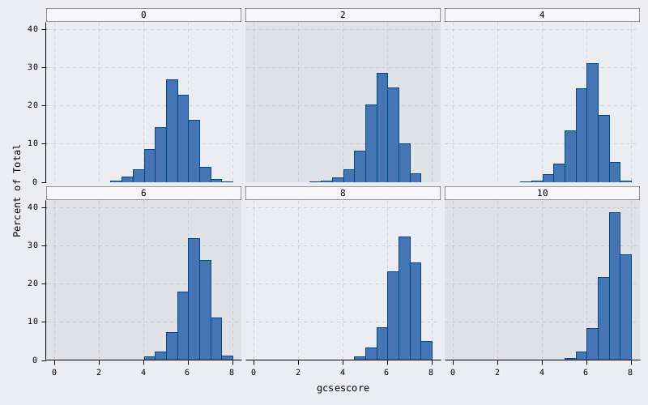
30.1.2 Fig 1.2 Densities
Source: Lattice Fig 1.2. Data: A-level chemistry scores, England 1997, R mlmRev package Chem97 (Yang et al. 2002); licence: GPL (>= 2) (mlmRev).
(plot/render-image
{:data chem97
:mapping {:x :gcsescore :facet :score}
:charts [(chart/density)]
:facets {:columns 3}
:labels {:x "gcsescore" :y "Density"}}
{:width 800 :height 500})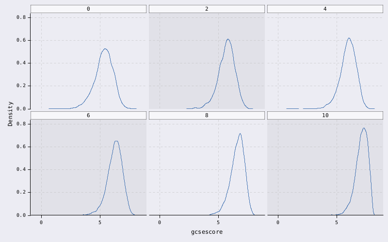
30.1.3 Fig 1.3 Grouped densities
The six densities in one panel, coloured by score; the score is a number, declared categorical for the colours.
Source: Lattice Fig 1.3. Data: A-level chemistry scores, England 1997, R mlmRev package Chem97 (Yang et al. 2002); licence: GPL (>= 2) (mlmRev).
(plot/render-image
{:data chem97
:mapping {:x :gcsescore :color :score}
:scales {:color {:type :categorical}}
:charts [(chart/density)]
:labels {:x "gcsescore" :y "Density"}}
{:width 700 :height 450})
30.1.4 Fig 1.4 Two plots on a page
Source: Lattice Fig 1.4. Data: A-level chemistry scores, England 1997, R mlmRev package Chem97 (Yang et al. 2002); licence: GPL (>= 2) (mlmRev).
(plot/render-image
(plot/arrange [{:data chem97
:mapping {:x :gcsescore :facet :score}
:charts [(chart/histogram)]
:facets {:columns 2}
:labels {:x "gcsescore" :y "Percent of Total"}}
{:data chem97
:mapping {:x :gcsescore :color :score}
:scales {:color {:type :categorical :title "score"}}
:charts [(chart/density)]
:labels {:x "gcsescore" :y "Density"}}]
{:columns 1})
{:width 600 :height 800})
30.2 Chapter 2 - A Technical Overview of lattice
30.2.1 Fig 2.1 Two conditioning variables
Oat yield by nitrogen, a panel per variety (columns) and block (rows): points joined by lines.
Source: Lattice Fig 2.1. Data: Oats yields: split-plot field trial, R MEMSS package Oats (Yates 1935; Pinheiro & Bates 2000); licence: GPL (>= 2) (MEMSS).
(plot/render-image
{:data oats
:mapping {:x :nitro :y :yield :facet-col :variety :facet-row :block}
:charts [(chart/line) (chart/scatter)]
:labels {:x "nitro" :y "yield"}}
{:width 700 :height 800})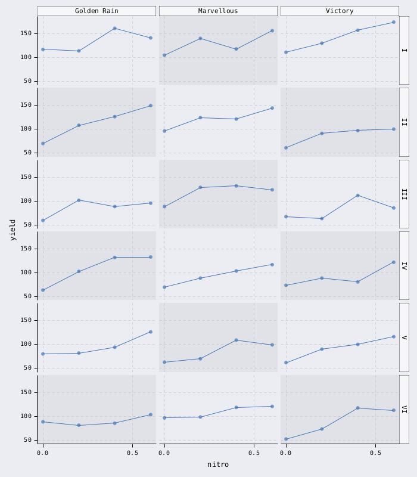
30.2.2 Fig 2.2 One block
Source: Lattice Fig 2.2. Data: Oats yields: split-plot field trial, R MEMSS package Oats (Yates 1935; Pinheiro & Bates 2000); licence: GPL (>= 2) (MEMSS).
(plot/render-image
{:data (filterv #(= "I" (:block %)) oats)
:mapping {:x :nitro :y :yield :facet :variety}
:charts [(chart/line) (chart/scatter)]
:facets {:columns 3}
:labels {:x "nitro" :y "yield"}}
{:width 800 :height 450})
30.2.3 Fig 2.3 Banked to 45 degrees
Lattice’s aspect = "xy" chooses the panel shape from the slopes of the lines; here the image is narrow instead.
Source: Lattice Fig 2.3. Data: Oats yields: split-plot field trial, R MEMSS package Oats (Yates 1935; Pinheiro & Bates 2000); licence: GPL (>= 2) (MEMSS).
(plot/render-image
{:data oats
:mapping {:x :nitro :y :yield :facet-col :variety :facet-row :block}
:charts [(chart/line) (chart/scatter {:size 3})]
:labels {:x "nitro" :y "yield"}}
{:width 380 :height 800})
30.2.4 Fig 2.4 Eighteen panels in three rows
Source: Lattice Fig 2.4. Data: Oats yields: split-plot field trial, R MEMSS package Oats (Yates 1935; Pinheiro & Bates 2000); licence: GPL (>= 2) (MEMSS).
(plot/render-image
{:data oats
:mapping {:x :nitro :y :yield :facet #(str (:block %) " " (:variety %))}
:charts [(chart/line) (chart/scatter {:size 3})]
:facets {:columns 6}
:labels {:x "nitro" :y "yield"}}
{:width 1000 :height 550})
30.2.5 Fig 2.5 Gaps between blocks
Lattice widens chosen gaps between panels (between); here each block is its own plot, arranged.
Source: Lattice Fig 2.5. Data: Oats yields: split-plot field trial, R MEMSS package Oats (Yates 1935; Pinheiro & Bates 2000); licence: GPL (>= 2) (MEMSS).
(plot/render-image
(plot/arrange (for [block ["I" "II" "III" "IV" "V" "VI"]]
{:data (filterv #(= block (:block %)) oats)
:mapping {:x :nitro :y :yield :facet :variety}
:charts [(chart/line) (chart/scatter {:size 3})]
:scales {:y {:domain [50 180]}}
:facets {:columns 3}
:labels {:title (str "Block " block) :x nil :y nil}})
{:columns 2})
{:width 1000 :height 700})
30.2.6 Fig 2.6 Dot plot
Barley yield of each variety at six sites, the two years in two shapes. Sites, varieties and years keep R’s factor order (nu/levels); lattice fills panels from the bottom, so the sites run top-down reversed.
Source: Lattice Fig 2.6. Data: Barley yields, Minnesota 1931-1932, R lattice package barley (Immer et al. 1934; Fisher 1971; Cleveland 1993); licence: GPL (>= 2) (lattice).
(plot/render-image
{:data barley
:mapping {:x :yield :y :variety :shape :year :facet :site}
:scales {:y {:domain (nu/levels :barley :variety)}
:facet {:domain (vec (rseq (nu/levels :barley :site)))}
:shape {:domain (nu/levels :barley :year)}}
:charts [(chart/scatter)]
:facets {:columns 1}
:theme {:text {:tick-label {:size 8}}}
:labels {:x "yield" :y nil}}
{:width 600 :height 800})
30.2.7 Fig 2.7 Groups within panels
Source: Lattice Fig 2.7. Data: Oats yields: split-plot field trial, R MEMSS package Oats (Yates 1935; Pinheiro & Bates 2000); licence: GPL (>= 2) (MEMSS).
(plot/render-image
{:data oats
:mapping {:x :nitro :y :yield :shape :variety :group :variety :facet :block}
:charts [(chart/line {:color :darkgrey}) (chart/scatter {:color :black :size 6})]
:facets {:columns 6}
:labels {:title "Yield of three varieties of oats - a 3 x 4 split plot experiment with 6 blocks"
:x "Nitrogen concentration (cwt/acre)" :y "Yield (bushels/acre)"}}
{:width 1000 :height 400})
30.2.8 Fig 2.8 Stacked bars
Titanic passengers by class, stacked by survival, a panel per age and sex.
Source: Lattice Fig 2.8. Data: Titanic passengers and crew by class, sex, age and survival, R datasets package Titanic (Dawson 1995); licence: Part of R (GPL-2 | GPL-3).
(def titanic-panels ["Child Male" "Child Female" "Adult Male" "Adult Female"])(plot/render-image
{:data titanic
:mapping {:x :n :y :class :color :survived :facet #(str (:age %) " " (:sex %))}
:scales {:facet {:domain titanic-panels}}
:charts [(chart/bar {:position :stack})]
:facets {:columns 4}
:theme {:panel {:grid {:x :none :y :none}}}
:labels {:x "Freq" :y nil}}
{:width 900 :height 350})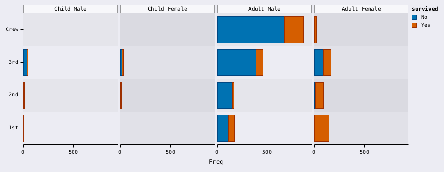
30.2.9 Fig 2.9 Free scales
Each panel its own count axis, so the small groups are readable.
Source: Lattice Fig 2.9. Data: Titanic passengers and crew by class, sex, age and survival, R datasets package Titanic (Dawson 1995); licence: Part of R (GPL-2 | GPL-3).
(plot/render-image
{:data titanic
:mapping {:x :n :y :class :color :survived :facet #(str (:age %) " " (:sex %))}
:scales {:facet {:domain titanic-panels}}
:charts [(chart/bar {:position :stack})]
:facets {:columns 4 :scales {:x :free}}
:theme {:panel {:grid {:x :none :y :none}}}
:labels {:x "Freq" :y nil}}
{:width 900 :height 350})
30.2.10 Fig 2.10 Vertical grid lines
Source: Lattice Fig 2.10. Data: Titanic passengers and crew by class, sex, age and survival, R datasets package Titanic (Dawson 1995); licence: Part of R (GPL-2 | GPL-3).
(plot/render-image
{:data titanic
:mapping {:x :n :y :class :color :survived :facet #(str (:age %) " " (:sex %))}
:scales {:facet {:domain titanic-panels}}
:charts [(chart/bar {:position :stack})]
:facets {:columns 4 :scales {:x :free}}
:theme {:panel {:grid {:y :none}}}
:labels {:x "Freq" :y nil}}
{:width 900 :height 350})
30.2.11 Fig 2.11 Bars without borders
Source: Lattice Fig 2.11. Data: Titanic passengers and crew by class, sex, age and survival, R datasets package Titanic (Dawson 1995); licence: Part of R (GPL-2 | GPL-3).
(plot/render-image
{:data titanic
:mapping {:x :n :y :class :color :survived :facet #(str (:age %) " " (:sex %))}
:scales {:facet {:domain titanic-panels}}
:charts [(chart/bar {:position :stack :stroke-color :none})]
:facets {:columns 4 :scales {:x :free}}
:theme {:panel {:grid {:x :none :y :none}}}
:labels {:x "Freq" :y nil}}
{:width 900 :height 350})
30.3 Chapter 3 - Visualizing Univariate Distributions
30.3.1 Fig 3.1 Kernel density
Old Faithful eruption times: a Gaussian kernel density, the values as jittered points along the bottom edge.
Source: Lattice Fig 3.1. Data: Old Faithful geyser eruptions, R datasets package faithful (Härdle 1991; Azzalini & Bowman 1990); licence: Part of R (GPL-2 | GPL-3).
(plot/render-image
{:data faithful
:mapping {:x :eruptions}
:charts [(chart/density) (chart/stripplot {:place :edge :thickness 16 :rng (r/rng :mersenne 31)})]
:labels {:x "eruptions" :y "Density"}}
{:width 600 :height 450})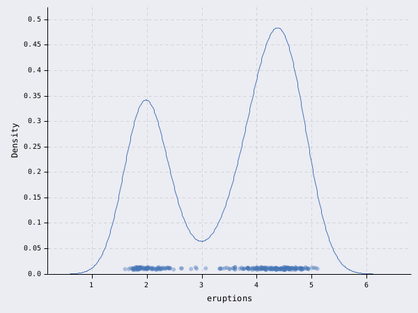
30.3.2 Fig 3.2 Rectangular kernel
A rectangular kernel of standard deviation 0.2 (R’s bw) - half-width 0.2 √3 - at 200 points.
Source: Lattice Fig 3.2. Data: Old Faithful geyser eruptions, R datasets package faithful (Härdle 1991; Azzalini & Bowman 1990); licence: Part of R (GPL-2 | GPL-3).
(plot/render-image
{:data faithful
:mapping {:x :eruptions}
:charts [(chart/density {:kernel :uniform :bandwidth (* 0.2 (m/sqrt 3.0)) :n 200}) (chart/rug {:thickness 16})]
:labels {:x "eruptions" :y "Density"}}
{:width 600 :height 450})
30.3.3 Fig 3.3 Densities by day
Flow cytometry of a graft-versus-host-disease patient: log forward scatter, a panel per day after transplant.
Source: Lattice Fig 3.3. Data: Flow cytometry of a GvHD patient, 10 days, R latticeExtra package gvhd10 (Brinkman et al. 2007); licence: GPL (>= 2) (latticeExtra).
(def gvhd10-log
"gvhd10 with log and log2 forward scatter."
(mapv (fn [{:keys [fsc-h] :as row}] (assoc row :log-fsc (m/log fsc-h) :log2-fsc (m/log2 fsc-h))) gvhd10))(plot/render-image
{:data gvhd10-log
:mapping {:x :log-fsc :facet :days}
:charts [(chart/density)]
:facets {:columns 2}
:labels {:x "log(FSC.H)" :y "Density"}}
{:width 700 :height 750})
30.3.4 Fig 3.4 Histograms on the density scale
Source: Lattice Fig 3.4. Data: Flow cytometry of a GvHD patient, 10 days, R latticeExtra package gvhd10 (Brinkman et al. 2007); licence: GPL (>= 2) (latticeExtra).
(plot/render-image
{:data gvhd10-log
:mapping {:x :log2-fsc :facet :days}
:charts [(chart/histogram {:bins 50 :y :density})]
:facets {:columns 2}
:labels {:x "log Forward Scatter" :y "Density"}}
{:width 700 :height 750})
30.3.5 Fig 3.5 Normal Q-Q plots
GCSE score quantiles against the standard normal, a panel per A-level score.
Source: Lattice Fig 3.5. Data: A-level chemistry scores, England 1997, R mlmRev package Chem97 (Yang et al. 2002); licence: GPL (>= 2) (mlmRev).
(plot/render-image
{:data chem97
:mapping {:y :gcsescore :facet :score}
:charts [(chart/qq {:x-distribution [:normal] :size 2 :line false})]
:facets {:columns 3}
:labels {:x "qnorm" :y "gcsescore"}}
{:width 800 :height 500})
30.3.6 Fig 3.6 Grouped Q-Q plots
Source: Lattice Fig 3.6. Data: A-level chemistry scores, England 1997, R mlmRev package Chem97 (Yang et al. 2002); licence: GPL (>= 2) (mlmRev).
(plot/render-image
{:data chem97
:mapping {:y :gcsescore :color :score :facet :gender}
:scales {:color {:type :categorical}}
:charts [(chart/qq {:x-distribution [:normal] :size 3 :line false})]
:facets {:columns 2}
:labels {:x "Standard Normal Quantiles" :y "Average GCSE Score"}}
{:width 800 :height 450})
30.3.7 Fig 3.7 A power transformation
GCSE score to the power 2.34 makes the score groups’ quantile curves nearly straight and parallel.
Source: Lattice Fig 3.7. Data: A-level chemistry scores, England 1997, R mlmRev package Chem97 (Yang et al. 2002); licence: GPL (>= 2) (mlmRev).
(def chem97-trans
"chem97 with the transformed GCSE score `gcsescore^2.34`."
(mapv #(assoc % :gcsescore-trans (m/pow (:gcsescore %) 2.34)) chem97))(plot/render-image
{:data chem97-trans
:mapping {:y :gcsescore-trans :color :score :facet :gender}
:scales {:color {:type :categorical :title "score"}}
:charts [(chart/qq {:x-distribution [:normal] :size 3 :line false})]
:facets {:columns 2}
:labels {:x "Standard Normal Quantiles" :y "Transformed GCSE Score"}}
{:width 800 :height 450})
30.3.8 Fig 3.8 Empirical CDFs
Source: Lattice Fig 3.8. Data: A-level chemistry scores, England 1997, R mlmRev package Chem97 (Yang et al. 2002); licence: GPL (>= 2) (mlmRev).
(def chem97-positive (filterv #(pos? (:gcsescore %)) chem97))(plot/render-image
{:data chem97-positive
:mapping {:x :gcsescore :color :gender :facet :score}
:charts [(chart/ecdf)]
:facets {:columns 3}
:labels {:x "Average GCSE Score" :y "Empirical CDF"}}
{:width 800 :height 500})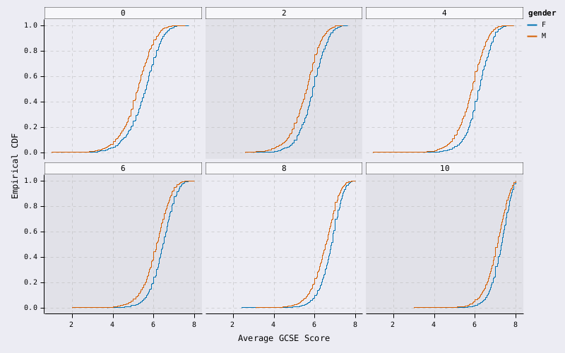
30.3.9 Fig 3.9 Uniform Q-Q plots
Quantiles against the uniform distribution: the empirical CDF with the axes swapped.
Source: Lattice Fig 3.9. Data: A-level chemistry scores, England 1997, R mlmRev package Chem97 (Yang et al. 2002); licence: GPL (>= 2) (mlmRev).
(plot/render-image
{:data chem97-positive
:mapping {:y :gcsescore :color :gender :facet :score}
:charts [(chart/qq {:x-distribution [:uniform-real] :size 3 :line false})]
:facets {:columns 6}
:labels {:x "Uniform quantiles" :y "Average GCSE Score"}}
{:width 1000 :height 400})
30.3.10 Fig 3.10 Two-sample Q-Q plots
100 quantiles of the boys’ scores against the girls’, per A-level score (ppoints(100) probabilities), and the line y = x.
Source: Lattice Fig 3.10. Data: A-level chemistry scores, England 1997, R mlmRev package Chem97 (Yang et al. 2002); licence: GPL (>= 2) (mlmRev).
(let [ps (mapv #(/ (- % 0.5) 100.0) (range 1 101))
quantiles (fn [rows] (stats/quantiles (map :gcsescore rows) ps))]
(plot/render-image
{:data (for [[score rows] (group-by :score chem97)
:let [by-gender (group-by :gender rows)]
[f m] (map vector (quantiles (by-gender "F")) (quantiles (by-gender "M")))]
{:score score :f f :m m})
:mapping {:x :m :y :f :facet :score}
:charts [(chart/scatter) (chart/rule {:slope 1 :intercept 0 :color :grey})]
:facets {:columns 3}
:aspect :iso
:labels {:x "M" :y "F"}}
{:width 800 :height 600}))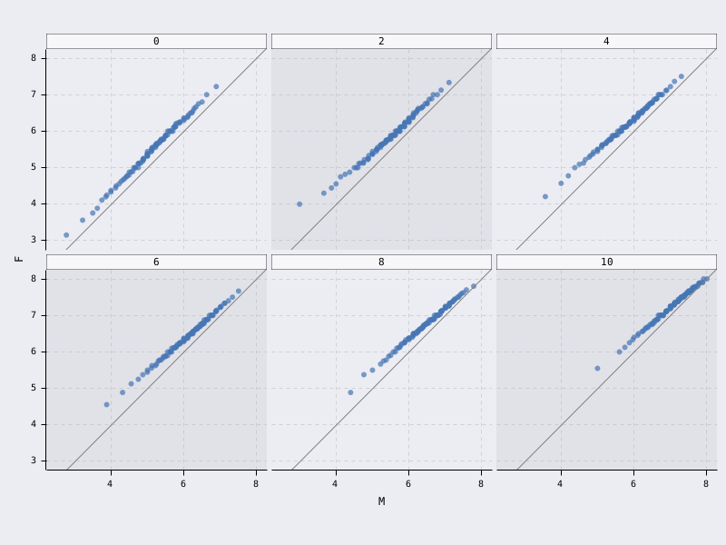
30.3.11 Fig 3.11 Box plots
Source: Lattice Fig 3.11. Data: A-level chemistry scores, England 1997, R mlmRev package Chem97 (Yang et al. 2002); licence: GPL (>= 2) (mlmRev).
(plot/render-image
{:data chem97
:mapping {:x :gcsescore :y (levels/categorical :score) :facet :gender}
:scales {:facet {:domain ["M" "F"]}}
:charts [(chart/box)]
:facets {:columns 2}
:labels {:x "Average GCSE Score" :y "score"}}
{:width 800 :height 450})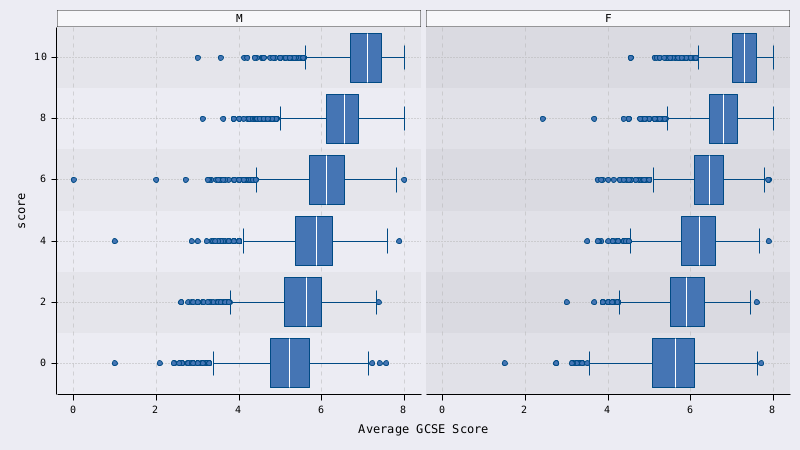
30.3.12 Fig 3.12 Box widths by group size
Source: Lattice Fig 3.12. Data: A-level chemistry scores, England 1997, R mlmRev package Chem97 (Yang et al. 2002); licence: GPL (>= 2) (mlmRev).
(plot/render-image
{:data chem97-trans
:mapping {:x :gender :y :gcsescore-trans :facet :score}
:scales {:x {:domain ["M" "F"]}}
:charts [(chart/box {:varwidth true})]
:facets {:columns 6}
:labels {:x nil :y "Transformed GCSE score"}}
{:width 900 :height 400})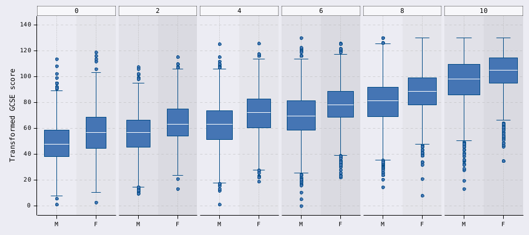
30.3.13 Fig 3.13 Box plots of many values
Source: Lattice Fig 3.13. Data: Flow cytometry of a GvHD patient, 10 days, R latticeExtra package gvhd10 (Brinkman et al. 2007); licence: GPL (>= 2) (latticeExtra).
(plot/render-image
{:data gvhd10-log
:mapping {:x :log-fsc :y (levels/categorical :days)}
:charts [(chart/box)]
:labels {:x "log(Forward Scatter)" :y "Days Past Transplant"}}
{:width 700 :height 500})
30.3.14 Fig 3.14 Violins
Tails 3 bandwidths past the data (:cut 3, R’s density default as lattice uses it).
Source: Lattice Fig 3.14. Data: Flow cytometry of a GvHD patient, 10 days, R latticeExtra package gvhd10 (Brinkman et al. 2007); licence: GPL (>= 2) (latticeExtra).
(plot/render-image
{:data gvhd10-log
:mapping {:x :log-fsc :y (levels/categorical :days)}
:charts [(chart/violin {:inner :none :cut 3})]
:labels {:x "log(Forward Scatter)" :y "Days Past Transplant"}}
{:width 700 :height 500})
30.3.15 Fig 3.15 Strip plot
Earthquake depth by magnitude, one strip per magnitude value.
Source: Lattice Fig 3.15. Data: Earthquakes off Fiji since 1964, R datasets package quakes (Harvard PRIM-H project); licence: Part of R (GPL-2 | GPL-3).
(plot/render-image
{:data quakes
:mapping {:x :depth :y (levels/categorical :mag)}
:charts [(chart/stripplot {:jitter 0})]
:labels {:x "depth" :y "mag"}}
{:width 600 :height 700})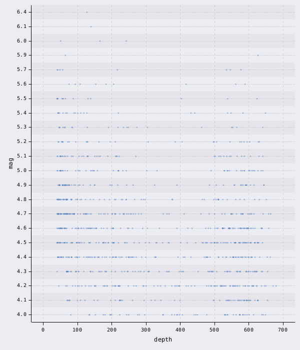
30.3.16 Fig 3.16 Jittered strips
Source: Lattice Fig 3.16. Data: Earthquakes off Fiji since 1964, R datasets package quakes (Harvard PRIM-H project); licence: Part of R (GPL-2 | GPL-3).
(plot/render-image
{:data quakes
:mapping {:x (levels/categorical :mag) :y :depth}
:charts [(chart/stripplot {:rng (r/rng :mersenne 316)})]
:labels {:x "Magnitude (Richter)" :y "Depth (km)"}}
{:width 800 :height 450})
30.3.17 Fig 3.17 Residuals and their medians
Square roots of the absolute residuals of an additive model of barley yield (variety + year + site, least squares on dummy-coded factors), jittered by site (in R’s order), a line through each year’s medians; two contrasting colours for the years.
Source: Lattice Fig 3.17. Data: Barley yields, Minnesota 1931-1932, R lattice package barley (Immer et al. 1934; Fisher 1971; Cleveland 1993); licence: GPL (>= 2) (lattice).
(def barley-residuals
"barley with `:root-residual` - the square root of the absolute residual of the additive least-squares model of
yield on variety, year and site (dummy-coded factors)."
(let [dummies (vec (for [k [:variety :year :site], level (rest (sort (distinct (map k barley))))] [k level]))
model (regression/lm (mapv :yield barley)
(mapv (fn [row] (mapv (fn [[k level]] (if (= level (k row)) 1.0 0.0)) dummies)) barley))]
(mapv (fn [row residual] (assoc row :root-residual (m/sqrt (m/abs residual))))
barley (get-in model [:residuals :raw]))))(def barley-residual-plot
"The residuals jittered by site (R's order), a line through each year's medians (in site order, left to right)."
(let [by-site-year (group-by (juxt :site :year) barley-residuals)
sites (nu/levels :barley :site)
medians (for [site sites year [1931 1932]]
{:site site :year year :median (stats/median (map :root-residual (by-site-year [site year])))})]
{:data barley-residuals
:mapping {:x :site :y :root-residual :color :year}
:scales {:x {:domain sites} :color {:type :categorical :range two-colors}}
:charts [(chart/stripplot {:rng (r/rng :mersenne 317)})
(chart/line {:data medians :mapping {:y :median}})]
:labels {:x nil :y "√|Residual Barley Yield|"}}))(plot/render-image barley-residual-plot {:width 800 :height 450})
30.4 Chapter 4 - Displaying Multiway Tables
30.4.1 Fig 4.1 Dot plot of a table
Virginia death rates (1940) per 1000 by age group, a panel per population group.
Source: Lattice Fig 4.1. Data: Death rates in Virginia (1940), R datasets package VADeaths (Molyneaux et al. 1947); licence: Part of R (GPL-2 | GPL-3).
(plot/render-image
{:data va-deaths
:mapping {:x :rate :y :age :facet :group}
:charts [(chart/scatter)]
:facets {:columns 2}
:labels {:x "Freq" :y nil}}
{:width 700 :height 450})
30.4.2 Fig 4.2 Stems from zero
Source: Lattice Fig 4.2. Data: Death rates in Virginia (1940), R datasets package VADeaths (Molyneaux et al. 1947); licence: Part of R (GPL-2 | GPL-3).
(plot/render-image
{:data va-deaths
:mapping {:x :rate :y :age :facet :group}
:charts [(chart/segment {:xend 0}) (chart/scatter)]
:facets {:columns 1}
:labels {:title "Death Rates in Virginia - 1940" :x "Rate (per 1000)" :y nil}}
{:width 450 :height 750})
30.4.3 Fig 4.3 Groups joined
One line per population group across the age groups (the rows in age order, unsorted by rate).
Source: Lattice Fig 4.3. Data: Death rates in Virginia (1940), R datasets package VADeaths (Molyneaux et al. 1947); licence: Part of R (GPL-2 | GPL-3).
(plot/render-image
{:data (sort-by :age va-deaths)
:mapping {:x :rate :y :age :color :group}
:charts [(chart/line {:sort false}) (chart/scatter)]
:labels {:title "Death Rates in Virginia - 1940" :x "Rate (per 1000)" :y nil}}
{:width 700 :height 450})
30.4.4 Fig 4.4 Bar charts
Source: Lattice Fig 4.4. Data: Death rates in Virginia (1940), R datasets package VADeaths (Molyneaux et al. 1947); licence: Part of R (GPL-2 | GPL-3).
(plot/render-image
{:data va-deaths
:mapping {:x :rate :y :age :facet :group}
:charts [(chart/bar)]
:facets {:columns 1}
:labels {:title "Death Rates in Virginia - 1940" :x "Rate (per 1000)" :y nil}}
{:width 450 :height 750})
30.4.5 Fig 4.5 Proportions as stacked bars
Reasons for taking a postdoctoral position, as proportions of each field (:position :normalize), in R’s order.
Source: Lattice Fig 4.5. Data: Reasons for taking a postdoc, by field, R latticeExtra package postdoc (NSF Survey of Doctorate Recipients 1999); licence: GPL (>= 2) (latticeExtra).
(plot/render-image
{:data postdoc
:mapping {:x :count :y :field :color :reason}
:scales {:color {:domain (nu/levels :postdoc :reason)}}
:charts [(chart/bar {:position :normalize})]
:labels {:x "Proportion" :y nil}}
{:width 900 :height 450})
30.4.6 Fig 4.6 Proportions as dot plots
Source: Lattice Fig 4.6. Data: Reasons for taking a postdoc, by field, R latticeExtra package postdoc (NSF Survey of Doctorate Recipients 1999); licence: GPL (>= 2) (latticeExtra).
(def postdoc-proportions
"postdoc counts as proportions of each field's total."
(let [totals (update-vals (group-by :field postdoc) #(reduce + (map :count %)))]
(mapv #(assoc % :proportion (/ (double (:count %)) (double (totals (:field %))))) postdoc)))(plot/render-image
{:data postdoc-proportions
:mapping {:x :proportion :y :field :facet :reason}
:charts [(chart/scatter)]
:facets {:columns 3}
:labels {:x "Proportion" :y nil}}
{:width 1000 :height 550})
30.4.7 Fig 4.7 Ordered panels and levels
Panels ordered by their median proportion, the fields within each panel by their proportion (free y scales).
Source: Lattice Fig 4.7. Data: Reasons for taking a postdoc, by field, R latticeExtra package postdoc (NSF Survey of Doctorate Recipients 1999); licence: GPL (>= 2) (latticeExtra).
(plot/render-image
{:data postdoc-proportions
:mapping {:x :proportion :y :field :facet :reason}
:scales {:facet {:order-by #(stats/median (map :proportion %)) :descending true}
:y {:order-by #(stats/mean (map :proportion %))}}
:charts [(chart/scatter)]
:facets {:columns 1 :scales {:y :free}}
:labels {:x "Proportion" :y nil}}
{:width 600 :height 800})
30.4.8 Fig 4.8 Frequencies as spikes
How many candidates have each average GCSE score, by gender.
Source: Lattice Fig 4.8. Data: A-level chemistry scores, England 1997, R mlmRev package Chem97 (Yang et al. 2002); licence: GPL (>= 2) (mlmRev).
(plot/render-image
{:data (for [[[score gender] n] (frequencies (map (juxt :gcsescore :gender) chem97))]
{:gcsescore score :gender gender :freq n})
:mapping {:x :gcsescore :y :freq :facet :gender}
:charts [(chart/segment {:yend 0})]
:facets {:columns 1}
:labels {:x "Average GCSE Score" :y "Freq"}}
{:width 800 :height 500})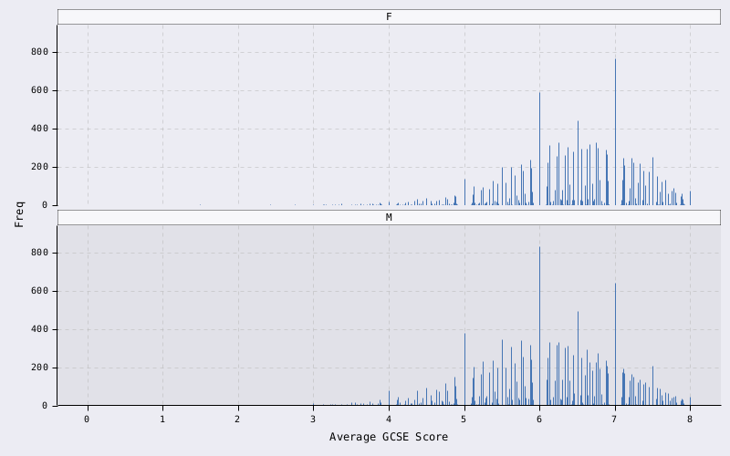
30.4.9 Fig 4.9 Bar chart of counts
Source: Lattice Fig 4.9. Data: A-level chemistry scores, England 1997, R mlmRev package Chem97 (Yang et al. 2002); licence: GPL (>= 2) (mlmRev).
(plot/render-image
{:data chem97
:mapping {:y (levels/categorical :score) :facet :gender}
:scales {:facet {:domain ["M" "F"]}}
:charts [(chart/bar {:stat :count})]
:flip true
:facets {:columns 2}
:labels {:x "Freq" :y "score"}}
{:width 800 :height 400})
30.5 Chapter 5 - Scatter Plots and Extensions
30.5.1 Fig 5.1 Conditioning on a cut numeric variable
Earthquake epicentres off Fiji, a panel per depth interval (two equal-width intervals, levels/bin).
Source: Lattice Fig 5.1. Data: Earthquakes off Fiji since 1964, R datasets package quakes (Harvard PRIM-H project); licence: Part of R (GPL-2 | GPL-3).
(plot/render-image
{:data (levels/bin quakes :depth {:as :depth-cut :bins 2})
:mapping {:x :long :y :lat :facet :depth-cut}
:charts [(chart/scatter {:shape \o :size 5})]
:facets {:columns 2}
:labels {:x "long" :y "lat"}}
{:width 800 :height 450})
30.5.2 Fig 5.2 Three depth intervals, isometric
Source: Lattice Fig 5.2. Data: Earthquakes off Fiji since 1964, R datasets package quakes (Harvard PRIM-H project); licence: Part of R (GPL-2 | GPL-3).
(plot/render-image
{:data (levels/bin quakes :depth {:as :depth-cut :bins 3 :label "Depth"})
:mapping {:x :long :y :lat :facet :depth-cut}
:charts [(chart/scatter {:size 4})]
:facets {:columns 3}
:aspect :iso
:labels {:x "Longitude" :y "Latitude"}}
{:width 900 :height 450})
30.5.3 Fig 5.3 Depth as groups
Depth cut at its terciles: three groups of equal size, coloured.
Source: Lattice Fig 5.3. Data: Earthquakes off Fiji since 1964, R datasets package quakes (Harvard PRIM-H project); licence: Part of R (GPL-2 | GPL-3).
(plot/render-image
{:data (levels/bin quakes :depth {:as :depth-cut :bins {:quantiles 3}})
:mapping {:x :long :y :lat :color :depth-cut}
:scales {:color {:title "Depth"}}
:charts [(chart/scatter {:size 4})]
:aspect :iso
:labels {:x "Longitude" :y "Latitude"}}
{:width 650 :height 650})
30.5.4 Fig 5.4 Depth as grey levels
Filled circles from dark (shallow) to light (deep); the deepest drawn first, so shallow ones stay on top.
Source: Lattice Fig 5.4. Data: Earthquakes off Fiji since 1964, R datasets package quakes (Harvard PRIM-H project); licence: Part of R (GPL-2 | GPL-3).
(def quakes-by-depth
"quakes, deepest first."
(vec (sort-by :depth > quakes)))(def grey-depth
"Colour scale of depth: grey levels as R's `gray.colors`, dark for shallow."
{:color {:range [[77 77 77] [230 230 230]] :title "depth"}})(plot/render-image
{:data quakes-by-depth
:mapping {:x :long :y :lat :color :depth}
:scales grey-depth
:charts [(chart/scatter {:size 8 :stroke-color :black :stroke-width 0.5})]
:aspect :iso
:legend false
:labels {:x "Longitude" :y "Latitude"}}
{:width 600 :height 650})
30.5.5 Fig 5.5 Grey levels by magnitude
A panel per magnitude interval: a shingle of four equal-count, half-overlapping intervals.
Source: Lattice Fig 5.5. Data: Earthquakes off Fiji since 1964, R datasets package quakes (Harvard PRIM-H project); licence: Part of R (GPL-2 | GPL-3).
(def quakes-magnitude
(shingle/shingle quakes-by-depth :mag {:count 4 :overlap 0.5 :as :magnitude :label "Magnitude"}))(plot/render-image
{:data quakes-magnitude
:mapping {:x :long :y :lat :color :depth :facet :magnitude}
:scales grey-depth
:charts [(chart/scatter {:size 7 :stroke-color :black :stroke-width 0.5})]
:facets {:columns 2}
:aspect :iso
:legend false
:labels {:x "Longitude" :y "Latitude"}}
{:width 700 :height 800})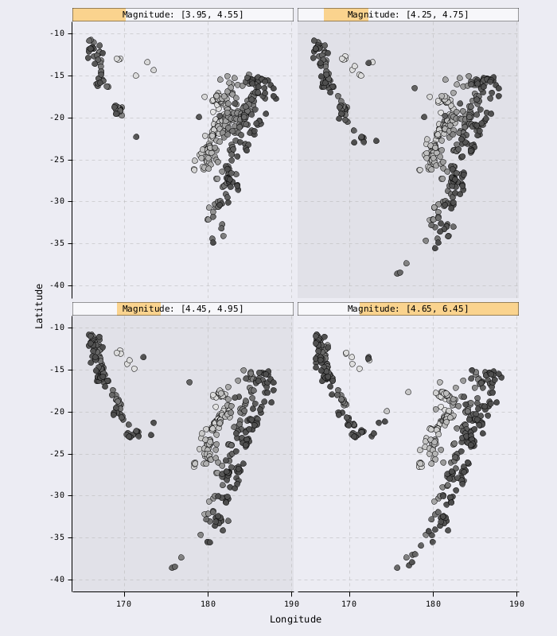
30.5.6 Fig 5.6 With a colour key
Source: Lattice Fig 5.6. Data: Earthquakes off Fiji since 1964, R datasets package quakes (Harvard PRIM-H project); licence: Part of R (GPL-2 | GPL-3).
(plot/render-image
{:data quakes-magnitude
:mapping {:x :long :y :lat :color :depth :facet :magnitude}
:scales grey-depth
:charts [(chart/scatter {:size 7 :stroke-color :black :stroke-width 0.5})]
:facets {:columns 2}
:aspect :iso
:labels {:x "Longitude" :y "Latitude"}}
{:width 750 :height 800})
30.5.7 Fig 5.7 Plot types
Lattice’s type argument drawn with cljplot2 charts on one seeded data set: points, lines in data order, both, a regression line, the grid alone, steps (two kinds), stems, averages per x, a loess curve. The bottom row repeats the last five with x and y exchanged (lattice’s horizontal = TRUE): the same charts of the swapped columns in a :flip plot.
Source: Lattice Fig 5.7.
(let [rng (r/rng :mersenne 2007041)
grid-xs (mapv #(+ -10.0 (* 20.0 (/ % 14.0))) (range 15))
xy (vec (for [_ (range 30)
:let [x (grid-xs (r/irandom rng 15))]]
{:x x :y (+ x (* 0.25 (m/sq (+ x 1.0))) (r/grandom rng 0.0 5.0))}))
sorted (sort-by :x xy)
steps (fn [corner] (concat (mapcat (fn [a b] [a (corner a b)]) sorted (rest sorted)) [(last sorted)]))
averages (for [[x rs] (sort-by key (group-by :x xy))] {:x x :y (stats/mean (map :y rs))})
types [["p" xy [(chart/scatter)]]
["l" xy [(chart/line {:sort false})]]
["o" xy [(chart/line {:sort false}) (chart/scatter)]]
["r" xy [(chart/smooth {:method :lm :band :none})]]
["g" xy [(chart/scatter {:color [0 0 0 0]})]]
["s" (steps (fn [a b] {:x (:x b) :y (:y a)})) [(chart/line {:sort false})]]
["S" (steps (fn [a b] {:x (:x a) :y (:y b)})) [(chart/line {:sort false})]]
["h" xy [(chart/segment {:yend 0})]]
["a" averages [(chart/line)]]
["smooth" xy [(chart/smooth {:band :none})]]]
panel (fn [[title data charts]]
{:data data :mapping {:x :x :y :y} :charts charts
:labels {:title (str "\"" title "\"") :x nil :y nil}})
swapped (mapv (fn [{:keys [x y]}] {:x y :y x}) xy)]
(plot/render-image
(plot/arrange (concat (map panel types)
;; horizontal: the same charts of the swapped columns, drawn flipped
(for [[title _ charts] (drop 5 types)
:let [sorted (sort-by :x swapped)
data (case title
"s" (concat (mapcat (fn [a b] [a {:x (:x b) :y (:y a)}]) sorted (rest sorted)) [(last sorted)])
"S" (concat (mapcat (fn [a b] [a {:x (:x a) :y (:y b)}]) sorted (rest sorted)) [(last sorted)])
"a" (for [[x rs] (sort-by key (group-by :x swapped))] {:x x :y (stats/mean (map :y rs))})
swapped)]]
(assoc (panel [(str title ", horizontal") data charts]) :flip true)))
{:columns 5})
{:width 1000 :height 650}))
30.5.8 Fig 5.8 Scatter plot with a loess curve
Peak ground acceleration against distance from the epicentre, for 23 Californian earthquakes.
Source: Lattice Fig 5.8. Data: Western US earthquakes: ground acceleration, R MEMSS package Earthquake (Joyner & Boore 1981); licence: GPL (>= 2) (MEMSS).
(def earthquake-labels {:x "Distance From Epicenter (km)" :y "Maximum Horizontal Acceleration (g)"})(plot/render-image
{:data earthquake
:mapping {:x :distance :y :accel}
:charts [(chart/scatter) (chart/smooth {:band :none})]
:labels earthquake-labels}
{:width 650 :height 500})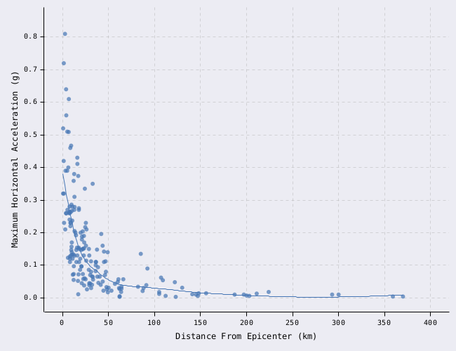
30.5.9 Fig 5.9 Logarithmic axes
Source: Lattice Fig 5.9. Data: Western US earthquakes: ground acceleration, R MEMSS package Earthquake (Joyner & Boore 1981); licence: GPL (>= 2) (MEMSS).
(def log2-axes
"Base-2 logarithmic x and y scales labelled as powers of two."
{:x {:kind :log :base 2 :formatter :power} :y {:kind :log :base 2 :formatter :power}})(plot/render-image
{:data earthquake
:mapping {:x :distance :y :accel}
:scales log2-axes
:charts [(chart/scatter) (chart/smooth {:band :none})]
:labels earthquake-labels}
{:width 650 :height 500})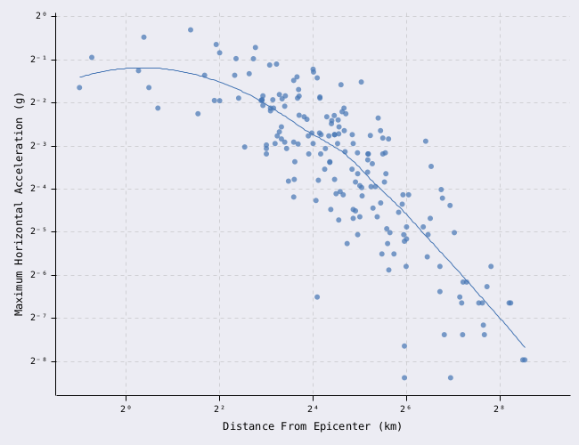
30.5.10 Fig 5.10 Local fits by magnitude
A panel per magnitude interval (three equal-count intervals overlapping by 10 %): a loess curve per panel (the book uses locfit) and the least-squares line of all quakes on the log-log scale, the same in every panel.
Source: Lattice Fig 5.10. Data: Western US earthquakes: ground acceleration, R MEMSS package Earthquake (Joyner & Boore 1981); licence: GPL (>= 2) (MEMSS).
(let [model (regression/lm (mapv #(m/log2 (:accel %)) earthquake) (mapv (fn [row] [(m/log2 (:distance row))]) earthquake))
intercept (:intercept model)
slope (first (:beta model))]
(plot/render-image
{:data (shingle/shingle earthquake :richter {:count 3 :overlap 0.1 :as :magnitude :label "Magnitude"})
:mapping {:x :distance :y :accel :facet :magnitude}
:scales log2-axes
:charts [(chart/scatter)
(chart/smooth {:band :none :color :grey :width 2})
(chart/function {:f (fn [d] (m/pow 2.0 (+ intercept (* slope (m/log2 d))))) :color :black})]
:facets {:columns 3}
:labels earthquake-labels}
{:width 900 :height 400}))
30.5.11 Fig 5.11 Several variables against one
Seattle-Tacoma weather, January to March 2007: minimum and maximum temperature and rainfall by day.
Source: Lattice Fig 5.11. Data: Seattle-Tacoma airport weather, Jan-Mar 2007, R latticeExtra package SeatacWeather (NOAA); licence: GPL (>= 2) (latticeExtra).
(def months {:facet {:domain ["January" "February" "March"]}})(def seatac-long
"SeaTac weather, one row per day and variable."
(for [row seatac, k [:min-temp :max-temp :precip]]
{:month (:month row) :day (:day row) :variable (name k) :value (k row)}))(plot/render-image
{:data seatac-long
:mapping {:x :day :y :value :group :variable :facet :month}
:scales months
:charts [(chart/line {:color :black})]
:facets {:columns 3}
:labels {:x "day" :y "Temperature and Rainfall"}}
{:width 900 :height 400})
30.5.12 Fig 5.12 Lines and stems
Rainfall scaled to the temperature range (× 80 / its maximum) and drawn as stems.
Source: Lattice Fig 5.12. Data: Seattle-Tacoma airport weather, Jan-Mar 2007, R latticeExtra package SeatacWeather (NOAA); licence: GPL (>= 2) (latticeExtra).
(def max-precip (reduce max (keep :precip seatac)))(plot/render-image
{:data seatac
:mapping {:x :day :facet :month}
:scales months
:charts [(chart/line {:mapping {:y :min-temp} :color :black})
(chart/line {:mapping {:y :max-temp} :color :black})
(chart/segment {:data (map #(update % :precip (fn [p] (some-> p (* 80.0) (/ max-precip)))) seatac)
:mapping {:y :precip} :yend 0 :color :black})]
:facets {:columns 3}
:labels {:x "day" :y "Temperature and Rainfall"}}
{:width 900 :height 400})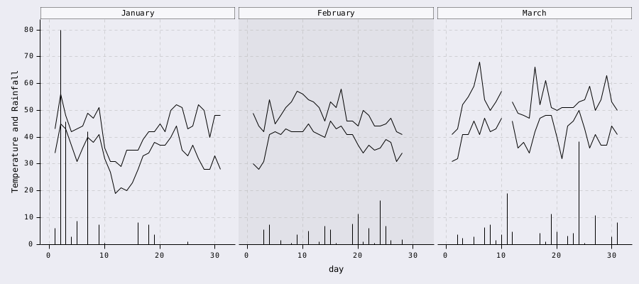
30.5.13 Fig 5.13 Temperature and rainfall, each on its own axis
The book adds a rainfall axis on the right of one panel; cljplot2 has no secondary axes, so the two measures are two plots - each with its own axis.
Source: Lattice Fig 5.13. Data: Seattle-Tacoma airport weather, Jan-Mar 2007, R latticeExtra package SeatacWeather (NOAA); licence: GPL (>= 2) (latticeExtra).
(plot/render-image
(plot/arrange [{:data (filter #(not= "precip" (:variable %)) seatac-long)
:mapping {:x :day :y :value :group :variable :facet :month}
:scales months
:charts [(chart/line {:color :black})]
:facets {:columns 3}
:labels {:x nil :y "Temperature (Fahrenheit)"}}
{:data seatac
:mapping {:x :day :y :precip :facet :month}
:scales months
:charts [(chart/segment {:yend 0 :color :black})]
:facets {:columns 3}
:labels {:x "day" :y "Rainfall (inches)"}}]
{:columns 1})
{:width 900 :height 600})
30.5.14 Fig 5.14 Hexagonal binning
Two fluorescence channels of the GvHD cells (asinh-transformed), counted in hexagons, a panel per day; grey levels by the square root of the count (:transform :sqrt, lattice’s trans = sqrt).
Source: Lattice Fig 5.14. Data: Flow cytometry of a GvHD patient, 10 days, R latticeExtra package gvhd10 (Brinkman et al. 2007); licence: GPL (>= 2) (latticeExtra).
(plot/render-image
{:data (mapv (fn [row] {:days (:days row) :ssc (m/asinh (:ssc-h row)) :fl2 (m/asinh (:fl2-h row))}) gvhd10)
:mapping {:x :fl2 :y :ssc :facet :days}
:scales {:x {:domain [0 10.5]} :color {:range [[200 200 200] [0 0 0]] :transform :sqrt}}
:charts [(chart/bin2d {:bins 30})]
:facets {:columns 4}
:aspect :iso
:labels {:x "asinh(FL2.H)" :y "asinh(SSC.H)"}}
{:width 900 :height 550})
30.5.15 Fig 5.15 Scatter-plot matrix
Source: Lattice Fig 5.15. Data: Violent crime rates by US state (1973), R datasets package USArrests (McNeil 1977); licence: Part of R (GPL-2 | GPL-3).
(plot/render-image
(plot/pairs us-arrests {:variables [:murder :assault :urban-pop :rape]
:upper (chart/scatter) :diagonal :names})
{:width 700 :height 700})
30.5.16 Fig 5.16 A matrix per region
Arrest rates of the states of each census region (joined from the state facts): points and a loess curve with lattice’s panel.loess settings (span 2/3, degree 1) - with a dozen states per region, ggplot2’s degree 2 bends.
Source: Lattice Fig 5.16. Data: Violent crime rates by US state (1973), R datasets package USArrests (McNeil 1977); licence: Part of R (GPL-2 | GPL-3).
(let [region (into {} (map (juxt :name :region) states))
rows (map #(assoc % :region (region (:state %))) us-arrests)
cell [(chart/scatter {:size 3}) (chart/smooth {:band :none :method-params {:bandwidth (/ 2.0 3.0) :degree 1}})]]
(plot/render-image
(plot/arrange (for [r ["Northeast" "South" "North Central" "West"]]
(plot/pairs (filterv #(= r (:region %)) rows)
{:variables [:urban-pop :murder :assault :rape]
:lower cell :upper cell :diagonal :names :title r}))
{:columns 2})
{:width 900 :height 800}))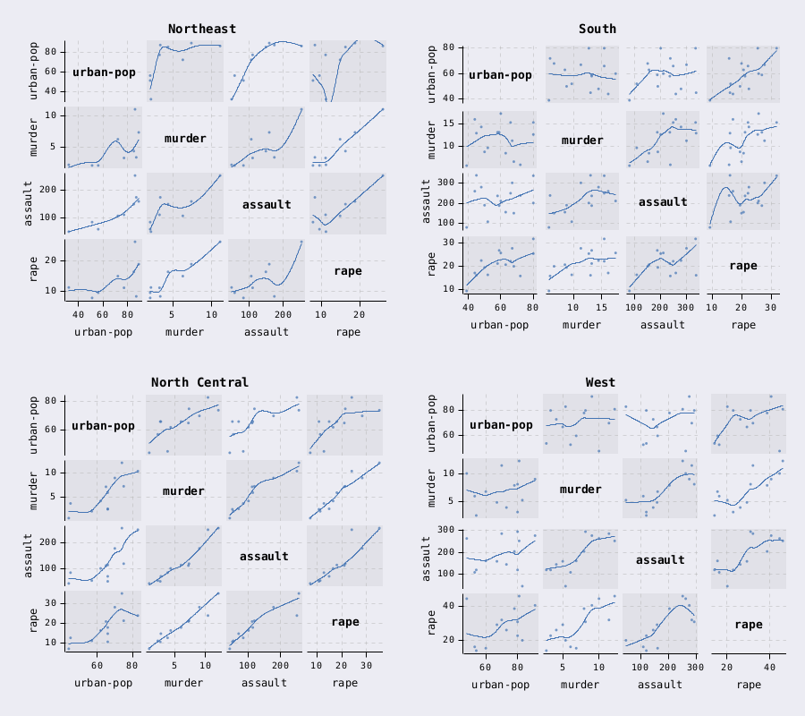
30.5.17 Fig 5.17 Groups in a scatter-plot matrix
Source: Lattice Fig 5.17. Data: Motor Trend car road tests (1974), R datasets package mtcars (Henderson & Velleman 1981); licence: Part of R (GPL-2 | GPL-3).
(plot/render-image
(plot/pairs mtcars {:variables [:mpg :disp :hp :drat :wt :qsec]
:mapping {:color (levels/categorical :cyl)}
:upper (chart/scatter) :diagonal :names
:labels {:mpg "Miles/gallon" :disp "Displacement" :hp "Horsepower"
:drat "Axle ratio" :wt "Weight" :qsec "1/4 mile time"}})
{:width 900 :height 800})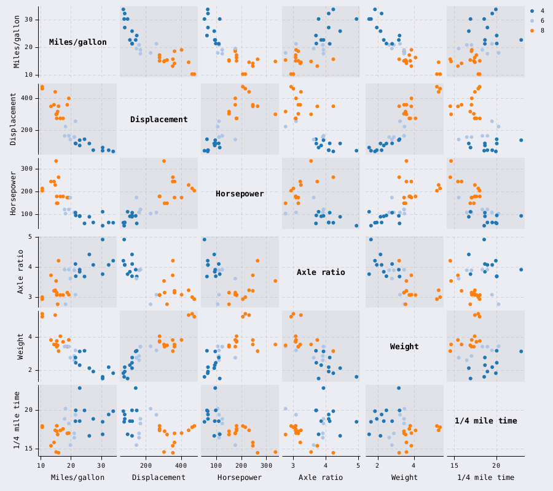
30.5.18 Fig 5.18 Parallel coordinates
Six car variables, a panel per cylinder count, coloured by the number of carburettors.
Source: Lattice Fig 5.18. Data: Motor Trend car road tests (1974), R datasets package mtcars (Henderson & Velleman 1981); licence: Part of R (GPL-2 | GPL-3).
(plot/render-image
{:data mtcars
:mapping {:color (levels/categorical :carb) :facet :cyl}
:charts [(chart/parallel {:variables [:mpg :disp :hp :drat :wt :qsec]})]
:facets {:columns 3}
:flip true
:labels {:x nil :y nil}}
{:width 900 :height 500})
30.5.19 Fig 5.19 Many translucent lines
The cells of day 13 (asinh-transformed channels), each a nearly transparent line (colour alpha 3 of 255).
Source: Lattice Fig 5.19. Data: Flow cytometry of a GvHD patient, 10 days, R latticeExtra package gvhd10 (Brinkman et al. 2007); licence: GPL (>= 2) (latticeExtra).
(plot/render-image
{:data (for [row gvhd10 :when (= 13 (:days row))]
(update-vals (select-keys row [:fl1-h :ssc-h :fl2-h :fsc-h :fl3-h]) m/asinh))
:charts [(chart/parallel {:variables [:fl1-h :ssc-h :fl2-h :fsc-h :fl3-h] :color [140 40 40 3]})]
:flip true
:labels {:x nil :y nil}}
{:width 700 :height 600})
30.6 Chapter 6 - Trivariate Displays
30.6.1 Fig 6.1 Three-dimensional scatter plot
Earthquake locations and depths (depth growing downward) in a box, a panel per magnitude interval.
Source: Lattice Fig 6.1. Data: Earthquakes off Fiji since 1964, R datasets package quakes (Harvard PRIM-H project); licence: Part of R (GPL-2 | GPL-3).
(def quakes-magnitude-4
"quakes with a shingle of four equal-count, half-overlapping magnitude intervals."
(shingle/shingle quakes :mag {:count 4 :overlap 0.5 :as :magnitude :label "Magnitude"}))(plot/render-image
{:data quakes-magnitude-4
:mapping {:x :lat :y :long :z :depth :facet :magnitude}
:charts [(chart/cloud {:domain {:z [680 40]} :view {:azimuth -105 :elevation 20 :distance 0.2} :size 3
:axis-titles {:x "Latitude" :y "Longitude" :z "Depth"}})]
:facets {:columns 2}}
{:width 800 :height 700})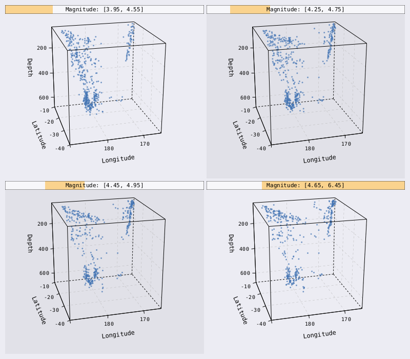
30.6.2 Fig 6.2 Another view
Source: Lattice Fig 6.2. Data: Earthquakes off Fiji since 1964, R datasets package quakes (Harvard PRIM-H project); licence: Part of R (GPL-2 | GPL-3).
(plot/render-image
{:data quakes-magnitude-4
:mapping {:x :lat :y :long :z :depth :facet :magnitude}
:charts [(chart/cloud {:domain {:z [680 40]} :view {:azimuth -80 :elevation 20 :distance 0.2} :size 3
:axis-titles {:x "Latitude" :y "Longitude" :z "Depth (km)"}})]
:facets {:columns 2}}
{:width 800 :height 700})
30.6.3 Fig 6.3 Turning the cloud
One cloud from eight directions: turned by lattice’s z = 30, 10, -10, -30 degrees down the rows (azimuth -z; lattice’s rows run bottom-up), the first column slightly higher (in place of the book’s 3-degree y turn).
Source: Lattice Fig 6.3. Data: Earthquakes off Fiji since 1964, R datasets package quakes (Harvard PRIM-H project); licence: Part of R (GPL-2 | GPL-3).
(plot/render-image
(plot/arrange (for [turn [30 10 -10 -30], tilt [33 30]]
{:data quakes
:mapping {:x :long :y :lat :z :depth}
:charts [(chart/cloud {:domain {:z [690 30]} :view {:azimuth (- turn) :elevation tilt :distance 0.2}
:axes false :size 2})]})
{:columns 2})
{:width 600 :height 800})
30.6.4 Fig 6.4 Spikes
Population density of the 48 contiguous states (people per square mile) as spikes over their centres.
Source: Lattice Fig 6.4. Data: US state facts (1970s), R datasets packages state.x77, state.name, state.abb, state.region, state.division, state.center (US Census); licence: Part of R (GPL-2 | GPL-3).
(def state-density
(for [{:keys [name long lat population area]} states
:when (not (#{"Alaska" "Hawaii"} name))]
{:name name :long long :lat lat :density (/ (* 1000.0 population) area)}))(plot/render-image
{:data state-density
:mapping {:x :long :y :lat :z :density}
:charts [(chart/cloud {:type :spikes :stroke-width 2 :view {:azimuth -40 :elevation 30 :distance 0.2}
:domain {:z [0 (reduce max (map :density state-density))]}
:axis-titles {:x "long" :y "lat" :z "density"}})]}
{:width 600 :height 500})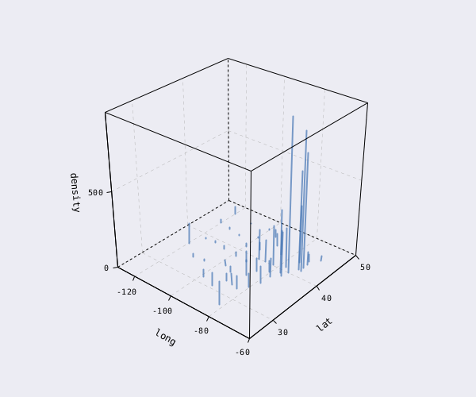
Not reproduced: Fig 6.5 (the spikes over a map of the states - no maps in cljplot2).
30.6.5 Fig 6.6 Ozone by wind and temperature
Cube root of ozone against wind speed and temperature, a panel per radiation interval.
Source: Lattice Fig 6.6. Data: Ozone and weather, New York 1973, R lattice package environmental (Bruntz et al. 1974; Cleveland 1993); licence: GPL (>= 2) (lattice).
(def env
"environmental with the cube root of ozone."
(mapv #(update % :ozone m/cbrt) (nu/dataset :environmental)))(plot/render-image
{:data (shingle/shingle env :radiation {:count 4 :overlap 0.5 :as :radiation-cut :label "Radiation"})
:mapping {:x :wind :y :temperature :z :ozone :facet :radiation-cut}
:charts [(chart/cloud {:size 4 :view {:azimuth -40 :elevation 30 :distance 0.2}})]
:facets {:columns 4}}
{:width 1000 :height 350})
30.6.6 Fig 6.7 Scatter-plot matrix
Source: Lattice Fig 6.7. Data: Ozone and weather, New York 1973, R lattice package environmental (Bruntz et al. 1974; Cleveland 1993); licence: GPL (>= 2) (lattice).
(plot/render-image
(plot/pairs env {:variables [:ozone :radiation :temperature :wind] :upper (chart/scatter) :diagonal :names})
{:width 650 :height 650})
30.6.7 Fig 6.8 Four models as surfaces
Ozone modelled on wind, temperature and radiation, evaluated on a wind x temperature grid at four radiation levels: a linear model with all interactions (as the book), and - in place of the book’s loess and locfit fits - a Gaussian process (kernel sigma 0.25), a radial basis function fit and Shepard interpolation (fastmath, on the predictors scaled to [0, 1]). Shepard’s inverse-distance weights use power 1 (default 2) for a smoother surface; it still passes through every observation, so the slices show small dimples where they come close to one. The view turned so the side along temperature, where ozone grows, faces us.
Source: Lattice Fig 6.8. Data: Ozone and weather, New York 1973, R lattice package environmental (Bruntz et al. 1974; Cleveland 1993); licence: GPL (>= 2) (lattice).
(def env-fits
"Fitted ozone on a 51 x 51 wind x temperature grid at 4 radiation levels, one row per model and grid point."
(let [predictors [:wind :temperature :radiation]
ranges (into {} (for [c predictors] [c [(reduce min (map c env)) (reduce max (map c env))]]))
unit (fn [point] (mapv (fn [c v] (let [[lo hi] (ranges c)] (/ (- v lo) (- hi lo)))) predictors point))
points (mapv (apply juxt predictors) env)
ozone (mapv :ozone env)
terms (fn [[w t r]] [r t w (* r t) (* r w) (* t w) (* r t w)])
linear (regression/lm ozone (mapv terms points))
gp (interp/interpolation :gp (mapv unit points) ozone (k/kernel :gaussian {:sigma 0.25}) {:noise 0.2})
rbf (interp/interpolation :rbf (mapv unit points) ozone (k/rbf :gaussian {:scale 0.4}) {:lambda 0.5})
shepard (interp/interpolation :shepard (mapv unit points) ozone {:p 1.0})
models [["linear" #(linear (terms %))] ["Gaussian process" #(gp (unit %))]
["radial basis" #(rbf (unit %))] ["Shepard" #(shepard (unit %))]]
mesh (fn [[lo hi] n] (mapv #(+ lo (* (- hi lo) (/ % (double n)))) (range (inc n))))]
(vec (for [[model f] models, r (mesh (ranges :radiation) 3), w (mesh (ranges :wind) 50), t (mesh (ranges :temperature) 50)]
{:model model :radiation (m/round r) :wind w :temperature t :fit (f [w t r])}))))(def model-order {:facet-row {:domain ["Shepard" "radial basis" "Gaussian process" "linear"]}})(plot/render-image
{:data env-fits
:mapping {:x :wind :y :temperature :z :fit :facet-col :radiation :facet-row :model}
:scales model-order
:charts [(chart/surface {:view {:azimuth -40 :elevation 30 :distance 0.2} :axes false})]}
{:width 900 :height 800})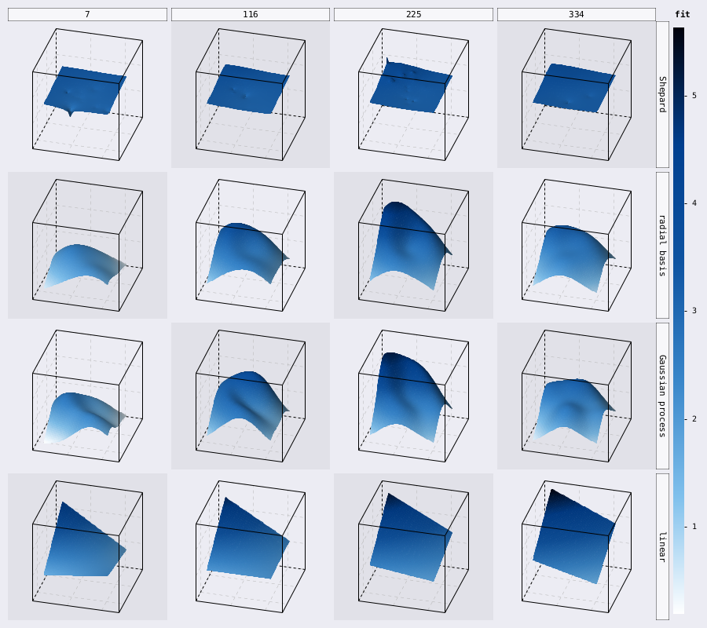
30.6.8 Fig 6.9 The same models as level plots
Source: Lattice Fig 6.9. Data: Ozone and weather, New York 1973, R lattice package environmental (Bruntz et al. 1974; Cleveland 1993); licence: GPL (>= 2) (lattice).
(plot/render-image
{:data env-fits
:mapping {:x :wind :y :temperature :value :fit :facet-col :radiation :facet-row :model}
:scales model-order
:charts [(chart/field)]
:labels {:x "wind" :y "temperature"}}
{:width 900 :height 800})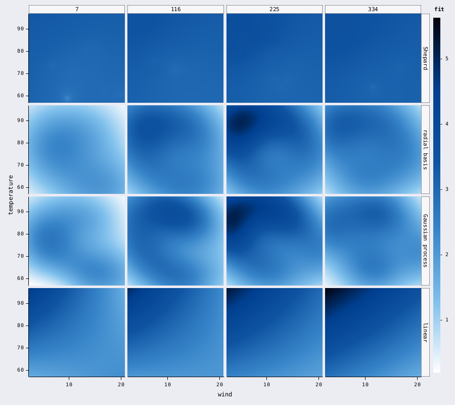
30.6.9 Fig 6.10 Labelled contours
The Gaussian process fit (in place of the book’s locfit) as contour lines with their levels, a panel per radiation level - the highest on top, as the book’s bottom-up panels.
Source: Lattice Fig 6.10. Data: Ozone and weather, New York 1973, R lattice package environmental (Bruntz et al. 1974; Cleveland 1993); licence: GPL (>= 2) (lattice).
(plot/render-image
{:data (filterv #(= "Gaussian process" (:model %)) env-fits)
:mapping {:x :wind :y :temperature :value :fit :facet :radiation}
:scales {:facet {:order-by #(:radiation (first %)) :descending true}}
:charts [(chart/contour {:levels 15 :labels true :color [40 40 40]})]
:facets {:columns 1}
:labels {:x "wind" :y "temperature"}}
{:width 500 :height 800})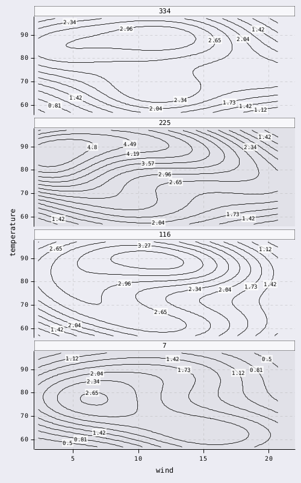
30.6.10 Fig 6.11 Volcano three ways
The Maunga Whau volcano (a 10 m grid of heights) as a level plot, as contours, as a wireframe.
Source: Lattice Fig 6.11. Data: Maunga Whau volcano topography, R datasets package volcano (Ross Ihaka); licence: Part of R (GPL-2 | GPL-3).
(def volcano (nu/dataset :volcano))(plot/render-image
(plot/arrange [{:data volcano
:mapping {:x :row :y :column :value :height}
:charts [(chart/field)]
:aspect :iso}
{:data volcano
:mapping {:x :row :y :column :value :height}
:charts [(chart/contour {:levels 20 :color :black})]
:aspect :iso}
{:data volcano
:mapping {:x :row :y :column :z :height}
:charts [(chart/surface {:style :wireframe :view {:azimuth -40 :elevation 30 :distance 0.2}
:color :black :stroke-width 0.3 :aspect [1 0.7 0.5]
:axis-titles {:x "row" :y "column" :z "volcano"}})]}]
{:columns 1 :heights [1 1 1.6]})
{:width 600 :height 800})
30.6.11 Fig 6.12 A correlation matrix
Pairwise correlations of the numeric columns of the 1993 cars (complete pairs).
Source: Lattice Fig 6.12. Data: Cars on sale in the USA, 1993, R MASS package Cars93 (Lock 1993); licence: GPL-2 | GPL-3 (MASS).
(def cars93 (nu/dataset :cars93))(def cars93-correlations
"Correlation of every pair of numeric Cars93 columns, over the rows where both are present."
(let [columns [:min-price :price :max-price :mpg-city :mpg-highway :engine-size :horsepower :rpm :rev-per-mile
:fuel-tank-capacity :passengers :length :wheelbase :width :turn-circle :rear-seat-room
:luggage-room :weight]]
(vec (for [a columns, b columns
:let [pairs (filter #(and (some? (a %)) (some? (b %))) cars93)]]
{:row (name a) :column (name b) :r (stats/correlation (map a pairs) (map b pairs))}))))(plot/render-image
{:data cars93-correlations
:mapping {:x :row :y :column :color :r}
:scales {:color {:domain [-1 1] :range :spectral-11}}
:charts [(chart/tile)]
:theme {:axis {:x {:label-rotation -90}}}
:labels {:x nil :y nil}}
{:width 900 :height 800})
30.6.12 Fig 6.13 Ordered by clustering
The same matrix, rows and columns in the order of a hierarchical clustering (the clustered heatmap without its dendrograms).
Source: Lattice Fig 6.13. Data: Cars on sale in the USA, 1993, R MASS package Cars93 (Lock 1993); licence: GPL-2 | GPL-3 (MASS).
(plot/render-image
(plot/clustered-heatmap cars93-correlations {:row :row :col :column :value :r :row-tree? false :col-tree? false
:scales {:color {:domain [-1 1] :range :spectral-11}}})
{:width 900 :height 800})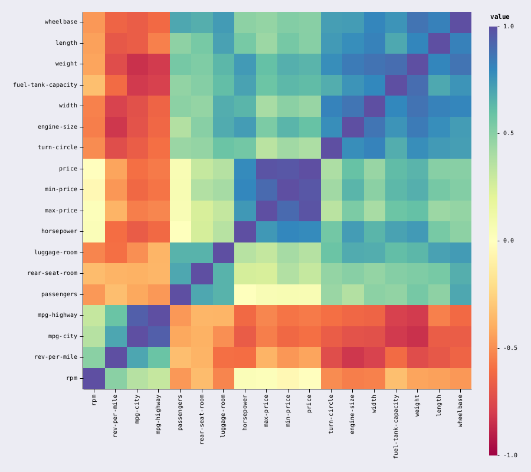
30.6.13 Fig 6.14 Cell sizes
Chem97 counts of A-level score by GCSE score decile per gender: colour and size by the square root of the count, the colour bar labelled in counts.
Source: Lattice Fig 6.14. Data: A-level chemistry scores, England 1997, R mlmRev package Chem97 (Yang et al. 2002); licence: GPL (>= 2) (mlmRev).
(def chem97-deciles
"Chem97 counts by A-level score, GCSE score decile and gender, every combination (zeros included)."
(let [binned (levels/bin chem97 :gcsescore {:as :gcd :bins {:quantiles 10}})
counts (frequencies (map (juxt :score :gcd :gender) binned))]
(vec (for [gender ["M" "F"], score (sort (distinct (map :score binned))), gcd (sort (distinct (map :gcd binned)))]
{:score score :gcd gcd :gender gender :count (get counts [score gcd gender] 0)}))))(plot/render-image
{:data (map #(assoc % :root (m/sqrt (:count %))) chem97-deciles)
:mapping {:x (levels/categorical :score) :y :gcd :color :root :size :root :facet :gender}
:scales {:size {:range [7 10] :legend false}
:facet {:domain ["M" "F"]}
:color {:formatter #(str (m/round (* (double %) (double %)))) :title "count"}}
:charts [(chart/tile)]
:facets {:columns 2}
:labels {:x "score" :y "gcd"}}
{:width 900 :height 500})
30.6.14 Fig 6.15 Bars in three dimensions
Source: Lattice Fig 6.15. Data: A-level chemistry scores, England 1997, R mlmRev package Chem97 (Yang et al. 2002); licence: GPL (>= 2) (mlmRev).
(plot/render-image
{:data chem97-deciles
:mapping {:x (levels/categorical :score) :y :gcd :z :count :facet :gender}
:scales {:facet {:domain ["M" "F"]}}
:charts [(chart/cloud {:type :bars :base 0 :color [180 180 180] :stroke-color [60 60 60] :stroke-width 1
:view {:azimuth 40 :elevation 65 :distance 0.2} :aspect [1 1.5 0.75] :axis-titles {:x "score" :y "gcd" :z "Freq"}})]
:facets {:columns 2}}
{:width 1000 :height 550})
Not reproduced: Figs 6.16 and 6.17 (copula densities - not in fastmath).
30.6.15 Fig 6.18 A parametric surface
A twisted band: x, y, z functions of angles u and v (the book’s kx, ky, kz with r = 2, t = 1), shaded, translucent. Seen from the side opposite the book’s view (its z = 170, azimuth -170), so x and y grow left to right without mirroring the band (:reverse #{:x} at the book’s view would mirror it).
Source: Lattice Fig 6.18.
(plot/render-image
{:charts [(chart/surface {:fu (fn [[u v]]
(let [band (+ 2.0 (* (m/cos (/ u 2.0)) (m/sin v)) (- (* (m/sin (/ u 2.0)) (m/sin (* 2.0 v)))))]
[(* (m/cos u) band) (* (m/sin u) band)
(+ (* (m/sin (/ u 2.0)) (m/sin v)) (* (m/cos (/ u 2.0)) (m/sin v)))]))
:u [(* 0.3 m/TWO_PI) (* 1.25 m/TWO_PI)] :v [0.0 m/TWO_PI] :n 50
:aspect [1 1 0.4] :view {:azimuth 10 :elevation 30 :distance 0.2}
:axis-titles {:x "kx(um, vm)" :y "ky(um, vm)" :z "kz(um, vm)"}})]
:scales {:color {:range [[60 80 200 190] [80 200 200 190] [240 230 120 190] [220 80 160 190]]}}}
{:width 800 :height 600})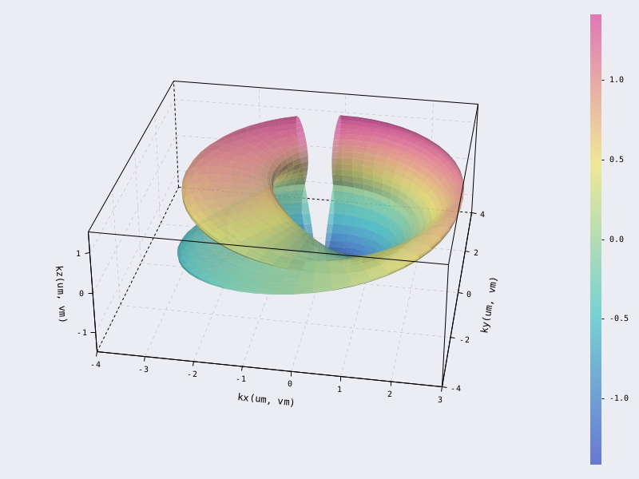
30.6.16 Fig 6.19 A level plot of population
US population by age and year, 1900 - 1979, per sex, on a spectral palette.
Source: Lattice Fig 6.19. Data: US population by age and sex, 1900-1979, R latticeExtra package USAge.df (US Census Bureau); licence: GPL (>= 2) (latticeExtra).
(plot/render-image
{:data (nu/dataset :us-age)
:mapping {:x :year :y :age :color :population :facet :sex}
:scales {:color {:range :spectral-11} :facet {:domain (nu/levels :us-age :sex)}}
:charts [(chart/tile)]
:facets {:columns 2}
:aspect :iso
:labels {:x "Year" :y "Age"}}
{:width 900 :height 500})
30.7 Chapter 7 - Graphical Parameters and Other Settings
30.7.1 Fig 7.1 Ordered groups with stems
Virginia death rates, a panel per age group; the population groups ordered by their mean rate.
Source: Lattice Fig 7.1. Data: Death rates in Virginia (1940), R datasets package VADeaths (Molyneaux et al. 1947); licence: Part of R (GPL-2 | GPL-3).
(def va-plot
{:data va-deaths
:mapping {:x :rate :y :group :facet :age}
:scales {:y {:order-by #(stats/mean (map :rate %))}}
:facets {:columns 5}
:labels {:title "Death Rates in Virginia - 1940" :x "Number of deaths per 100" :y nil}})(plot/render-image
(assoc va-plot :charts [(chart/segment {:xend 0}) (chart/scatter)])
{:width 1000 :height 350})
30.7.2 Fig 7.2 Changed settings
The book changes lattice’s settings: no dotted guide lines, stems twice as wide. Here the same as plot options - no grid, :width 2.
Source: Lattice Fig 7.2. Data: Death rates in Virginia (1940), R datasets package VADeaths (Molyneaux et al. 1947); licence: Part of R (GPL-2 | GPL-3).
(plot/render-image
(assoc va-plot
:charts [(chart/segment {:xend 0 :width 2}) (chart/scatter)]
:theme {:panel {:grid {:x :none :y :none}}})
{:width 1000 :height 350})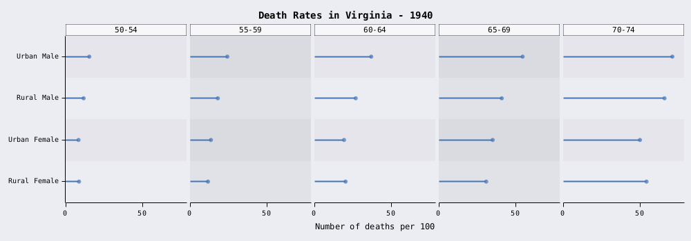
30.7.3 Fig 7.3 Settings and their parameters
Which graphical parameters (columns) each lattice setting (rows) has: parameters by how many settings use them, settings by how many parameters they have.
Source: Lattice Fig 7.3. Data: lattice graphical settings and their parameters, R lattice package trellis.par.get() (Sarkar 2008, Fig 7.3); licence: GPL (>= 2) (lattice).
(let [settings (nu/dataset :lattice-settings)
by-count (fn [k descending?] (->> (frequencies (map k settings)) (sort-by (fn [[v n]] [(if descending? (- n) n) v])) (mapv key)))]
(plot/render-image
{:data settings
:mapping {:x :parameter :y :setting}
:scales {:x {:domain (by-count :parameter true)} :y {:domain (by-count :setting false)}}
:charts [(chart/scatter {:size 5 :color :black})]
:theme {:panel {:grid {:x {:color [160 160 160] :width 0.5 :dash :none} :y {:color [160 160 160] :width 0.5 :dash :none}}}}
:labels {:x "Graphical parameters" :y "Setting names"}}
{:width 900 :height 700}))
Not reproduced: Fig 7.4 (lattice’s own graphical settings).
30.8 Chapter 8 - Plot Coordinates and Axis Annotation
30.8.1 Fig 8.1 A reversed axis
Depth growing downward (a reversed y domain), jittered by magnitude.
Source: Lattice Fig 8.1. Data: Earthquakes off Fiji since 1964, R datasets package quakes (Harvard PRIM-H project); licence: Part of R (GPL-2 | GPL-3).
(plot/render-image
{:data quakes
:mapping {:x (levels/categorical :mag) :y :depth}
:scales {:y {:domain [700 0]}}
:charts [(chart/stripplot {:rng (r/rng :mersenne 81)})]
:labels {:x "Magnitude (Richter scale)" :y "depth"}}
{:width 900 :height 400})
30.8.2 Fig 8.2 A long series cut into slices
Hourly accesses of the Bioconductor website in 2007, cut into nine overlapping time slices (a shingle of the hours: equal counts of hourly rows, so equal lengths), each panel its own date range, no strips. Lattice’s relation = "sliced" (equal ranges) needs numbers in cljplot2; the equal-length slices make :free the same.
Source: Lattice Fig 8.2. Data: Hourly accesses of the Bioconductor website, 2007, R latticeExtra package biocAccess (Bioconductor web logs); licence: GPL (>= 2) (latticeExtra).
(plot/render-image
{:data (shingle/shingle (map-indexed (fn [i row] (assoc row :hour-index i :thousands (/ (:counts row) 1000.0)
:date (java.time.LocalDateTime/parse (:time row))))
(nu/dataset :bioc-access))
:hour-index {:count 9 :overlap 0.1 :as :slice})
:mapping {:x :date :y :thousands :facet :slice}
:scales {:x {:nice false :formatter "MMM dd"}}
:charts [(chart/line {:width 0.6 :padding {:x [0 0] :y [0.05 0.05]}})]
:facets {:columns 1 :strips false :scales {:x :free}}
:labels {:x nil :y "Number of accesses (thousands)"}}
{:width 900 :height 800})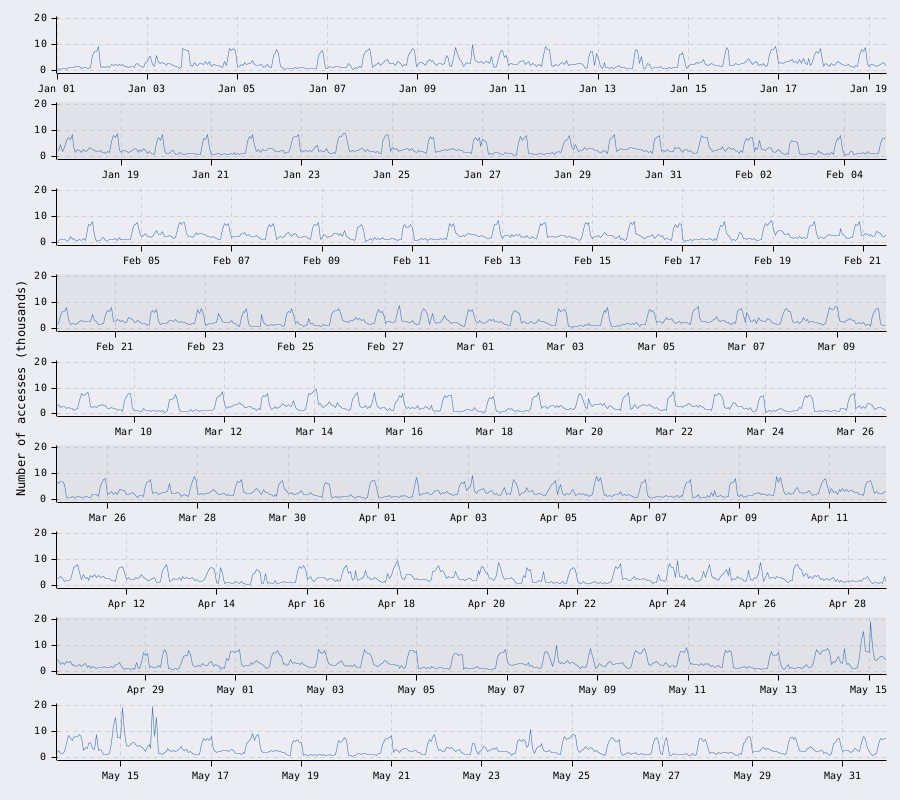
30.8.3 Fig 8.3 Logarithmic axes, banked
Source: Lattice Fig 8.3. Data: Western US earthquakes: ground acceleration, R MEMSS package Earthquake (Joyner & Boore 1981); licence: GPL (>= 2) (MEMSS).
(plot/render-image
{:data earthquake
:mapping {:x :distance :y :accel}
:scales log2-axes
:charts [(chart/scatter) (chart/smooth {:band :none})]
:labels earthquake-labels}
{:width 500 :height 550})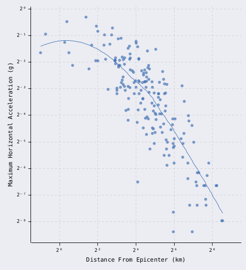
30.8.4 Fig 8.4 Chosen tick positions
Log-2 axes: distances labelled at 1, 3, 10, 30, … (explicit ticks), accelerations as powers of two; a panel per magnitude class. (The book also labels the right axis with fractions - no secondary axes here.)
Source: Lattice Fig 8.4. Data: Western US earthquakes: ground acceleration, R MEMSS package Earthquake (Joyner & Boore 1981); licence: GPL (>= 2) (MEMSS).
(plot/render-image
{:data (levels/bin earthquake :richter {:as :magnitude :bins [4.9 5.5 6.5 7.8]})
:mapping {:x :distance :y :accel :facet :magnitude}
:scales {:x {:kind :log :base 2 :ticks [1 3 10 30 100 300]} :y {:kind :log :base 2 :formatter :power}}
:charts [(chart/scatter)]
:facets {:columns 3}
:labels earthquake-labels}
{:width 900 :height 400})
30.8.5 Fig 8.5 Minor ticks
Log-10 axes with minor ticks at 2 … 9 of every decade.
Source: Lattice Fig 8.5. Data: Western US earthquakes: ground acceleration, R MEMSS package Earthquake (Joyner & Boore 1981); licence: GPL (>= 2) (MEMSS).
(plot/render-image
{:data earthquake
:mapping {:x :distance :y :accel}
:scales {:x {:kind :log :minor-ticks 1} :y {:kind :log}}
:charts [(chart/scatter)]
:theme {:panel {:grid {:minor {:color [180 180 180] :width 0.5 :dash [1.0 2.0]}}}}
:labels earthquake-labels}
{:width 500 :height 550})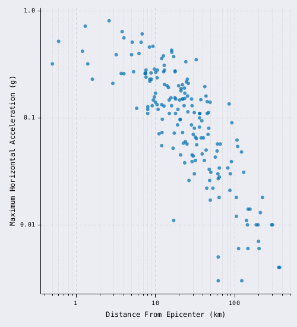
30.8.6 Fig 8.6 Fahrenheit and Celsius
Yearly mean temperature in New Haven. The book adds a Celsius axis on the right; here the two scales are two plots (no secondary axes).
Source: Lattice Fig 8.6. Data: Mean annual temperature, New Haven 1912-1971, R datasets package nhtemp (Vaux 1972); licence: Part of R (GPL-2 | GPL-3).
(let [nhtemp (map #(assoc % :celsius (/ (* 5.0 (- (:value %) 32.0)) 9.0)) (nu/dataset :nhtemp))]
(plot/render-image
(plot/arrange [{:data nhtemp :mapping {:x :time :y :value} :charts [(chart/line) (chart/scatter)]
:labels {:x nil :y "Fahrenheit"}}
{:data nhtemp :mapping {:x :time :y :celsius} :charts [(chart/line) (chart/scatter)]
:labels {:x "Year" :y "Celsius"}}]
{:columns 1 :title "Yearly temperature in New Haven, CT"})
{:width 900 :height 450}))
30.9 Chapter 9 - Labels and Legends
30.9.1 Fig 9.1 Groups and a legend
1993 cars: price against engine size, a panel per airbag type (ordered by mean price), coloured by the number of cylinders (the one rotary engine left out); price on a log-2 axis.
Source: Lattice Fig 9.1. Data: Cars on sale in the USA, 1993, R MASS package Cars93 (Lock 1993); licence: GPL-2 | GPL-3 (MASS).
(plot/render-image
{:data (remove #(= "rotary" (:cylinders %)) cars93)
:mapping {:x :engine-size :y :price :color :cylinders :facet :air-bags}
:scales {:y {:kind :log :base 2 :formatter :power}
:facet {:order-by #(stats/mean (map :price %))}
:color {:domain (vec (remove #{"rotary"} (nu/levels :cars93 :cylinders)))}}
:charts [(chart/scatter)]
:facets {:columns 3}
:labels {:x "Engine Size (litres)" :y "Average Price (1000 USD)"}}
{:width 900 :height 400})
30.9.2 Fig 9.2 Two aesthetics, two legends
Cylinders as the point shape, airbags as the fill (none, grey, black - R’s level order), outlined in black.
Source: Lattice Fig 9.2. Data: Cars on sale in the USA, 1993, R MASS package Cars93 (Lock 1993); licence: GPL-2 | GPL-3 (MASS).
(plot/render-image
{:data cars93
:mapping {:x :engine-size :y :price :shape :cylinders :color :air-bags}
:scales {:y {:kind :log :base 2 :formatter :power}
:shape {:domain (nu/levels :cars93 :cylinders) :range [\O \S \A \V \{ \}]}
:color {:domain (nu/levels :cars93 :air-bags) :range [[255 255 255 0] [160 160 160] [0 0 0]]}}
:charts [(chart/scatter {:size 8 :stroke-color :black})]
:labels {:x "EngineSize" :y "Price"}}
{:width 700 :height 450})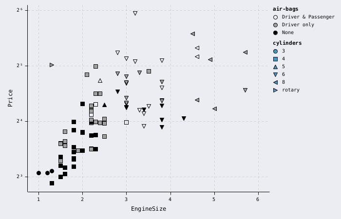
30.9.3 Fig 9.3 A heatmap with a dendrogram
US arrest rates scaled per column, the states (rows) ordered by a hierarchical clustering (Canberra distance), its dendrogram on the right. (The book also colours the leaves by region.)
Source: Lattice Fig 9.3. Data: Violent crime rates by US state (1973), R datasets package USArrests (McNeil 1977); licence: Part of R (GPL-2 | GPL-3).
(let [columns [:murder :assault :urban-pop :rape]
scaled (fn [k] (let [vs (map k us-arrests) mu (stats/mean vs) sd (stats/stddev vs)] (fn [v] (/ (- v mu) sd))))
scalers (into {} (map (juxt identity scaled) columns))]
(plot/render-image
(plot/clustered-heatmap (for [row us-arrests, k columns] {:state (:state row) :variable (name k) :z ((scalers k) (k row))})
{:row :state :col :variable :value :z :distance :canberra :col-tree? false :tree-size [0.3 0.2]
:scales {:color {:range :spectral-11}}})
{:width 600 :height 800}))
Not reproduced: Figs 9.4 and 9.5 (the book’s figures page has neither an image nor code for them).
30.10 Chapter 10 - Data Manipulation and Related Topics
30.10.1 Fig 10.1 A subset as a table
Titanic adults by class and survival, a panel per sex.
Source: Lattice Fig 10.1. Data: Titanic passengers and crew by class, sex, age and survival, R datasets package Titanic (Dawson 1995); licence: Part of R (GPL-2 | GPL-3).
(def titanic-adults (filterv #(= "Adult" (:age %)) titanic))(plot/render-image
{:data titanic-adults
:mapping {:x :n :y :class :color :survived :facet :sex}
:scales {:y {:domain (nu/levels :titanic :class)} :facet {:domain (nu/levels :titanic :sex)}}
:charts [(chart/bar {:position :stack})]
:facets {:columns 2}
:labels {:x "Freq" :y nil}}
{:width 800 :height 350})
30.10.2 Fig 10.2 Two columns stacked
The book reshapes the table wide (a Dead and an Alive column) and stacks the two columns; here the wide rows melted back to long ones - the same bars.
Source: Lattice Fig 10.2. Data: Titanic passengers and crew by class, sex, age and survival, R datasets package Titanic (Dawson 1995); licence: Part of R (GPL-2 | GPL-3).
(let [wide (for [[[class sex] rows] (group-by (juxt :class :sex) titanic-adults)
:let [n (into {} (map (juxt :survived :n) rows))]]
{:class class :sex sex :dead (n "No") :alive (n "Yes")})]
(plot/render-image
{:data (for [row wide, k [:dead :alive]] {:class (:class row) :sex (:sex row) :column (name k) :n (k row)})
:mapping {:x :n :y :class :color :column :facet :sex}
:scales {:y {:domain (nu/levels :titanic :class)} :facet {:domain (nu/levels :titanic :sex)}
:color {:domain ["dead" "alive"]}}
:charts [(chart/bar {:position :stack})]
:facets {:columns 2}
:labels {:x "Dead + Alive" :y nil}}
{:width 800 :height 350}))30.10.3 Fig 10.3 Missing values on the margins
GCSE written exam against coursework scores per gender (slightly jittered), with a loess curve; rugs mark the scores of students missing the other one - coursework without a written score along the bottom, written scores without coursework along the left side.
Source: Lattice Fig 10.3. Data: GCSE coursework and written exam scores, R mlmRev package Gcsemv (Rasbash et al. 2000); licence: GPL (>= 2) (mlmRev).
(def gcsemv (nu/dataset :gcsemv))(plot/render-image
{:data gcsemv
:mapping {:x :course :y :written :facet :gender}
:charts [(chart/scatter {:shape \o :size 5 :jitter [0.5 0.5] :rng (r/rng :mersenne 103)}) (chart/smooth {:band :none})
(chart/rug {:data (filter #(nil? (:written %)) gcsemv) :mapping {:x :course :y nil} :thickness 12})
(chart/rug {:data (filter #(nil? (:course %)) gcsemv) :mapping {:x nil :y :written} :level-axis :x
:place :edge :thickness 12})]
:facets {:columns 2}
:labels {:x "Coursework score" :y "Written exam score"}}
{:width 900 :height 450})
30.10.4 Fig 10.4 Two variables as panels
Normal Q-Q plots of the written and the coursework score (200 quantiles each), coloured by gender.
Source: Lattice Fig 10.4. Data: GCSE coursework and written exam scores, R mlmRev package Gcsemv (Rasbash et al. 2000); licence: GPL (>= 2) (mlmRev).
(plot/render-image
{:data (for [row gcsemv, k [:written :course] :when (some? (k row))] {:gender (:gender row) :variable (name k) :score (k row)})
:mapping {:y :score :color :gender :facet :variable}
:scales {:facet {:domain ["written" "course"]} :color {:range two-colors}}
:charts [(chart/qq {:x-distribution [:normal] :size 3 :line false})]
:facets {:columns 2}
:labels {:x "qnorm" :y "Score"}}
{:width 800 :height 400})
30.10.5 Fig 10.5 Groups of different sizes
Two seeded exponential samples - 2000 values truncated above 1, and 1000 - against exponential quantiles.
Source: Lattice Fig 10.5.
(let [rng (r/rng :mersenne 20051028)
exp-sample (fn [n] (repeatedly n #(- (m/log (r/drandom rng)))))
x1 (filter #(> % 1.0) (exp-sample 2000))
x2 (exp-sample 1000)]
(plot/render-image
{:data (concat (map (fn [v] {:which "x1" :data v}) x1) (map (fn [v] {:which "x2" :data v}) x2))
:mapping {:y :data :color :which}
:scales {:color {:range two-colors}}
:charts [(chart/qq {:x-distribution [:exponential] :size 3 :line false})]
:aspect :iso
:labels {:x "qexp" :y "data"}}
{:width 550 :height 500}))
30.10.6 Fig 10.6 Sliced time
Body temperature of two beavers by hour since their first day, coloured by activity; each panel its own hour range of the same length (:sliced).
Source: Lattice Fig 10.6. Data: Body temperature of two beavers, R datasets packages beaver1, beaver2 (Reynolds 1994); licence: Part of R (GPL-2 | GPL-3).
(plot/render-image
{:data (for [{:keys [day time activ] :as row} (nu/dataset :beavers)]
(assoc row :hour (+ (quot time 100) (* 24 (- day 307)) (/ (mod time 100) 60.0))
:activity (if (zero? activ) "inactive" "active")))
:mapping {:x :hour :y :temp :color :activity :facet :beaver}
:scales {:color {:domain ["inactive" "active"] :range two-colors}}
:charts [(chart/scatter)]
:facets {:columns 2 :scales {:x :sliced}}
:labels {:x "Time (hours)" :y "Body Temperature (C)"}}
{:width 900 :height 400})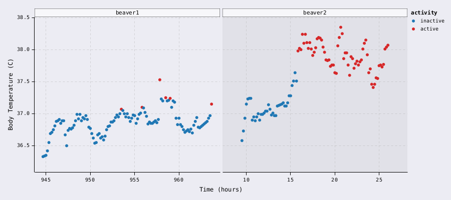
30.10.7 Fig 10.7 Population by age, a panel per year
Source: Lattice Fig 10.7. Data: US population by age and sex, 1900-1979, R latticeExtra package USAge.df (US Census Bureau); licence: GPL (>= 2) (latticeExtra).
(def us-age (nu/dataset :us-age))(def us-sex {:color {:domain (nu/levels :us-age :sex) :range two-colors}})(plot/render-image
{:data (filter #(contains? (set (range 1905 1976 10)) (:year %)) us-age)
:mapping {:x :age :y :population :color :sex :facet :year}
:scales us-sex
:charts [(chart/line)]
:facets {:columns 4}
:labels {:x "Age" :y "Population (millions)"}}
{:width 900 :height 450})
30.10.8 Fig 10.8 Population by year, a panel per age
Source: Lattice Fig 10.8. Data: US population by age and sex, 1900-1979, R latticeExtra package USAge.df (US Census Bureau); licence: GPL (>= 2) (latticeExtra).
(plot/render-image
{:data (filter #(#{0 10 20} (:age %)) us-age)
:mapping {:x :year :y :population :color :sex :facet :age}
:scales us-sex
:charts [(chart/line)]
:facets {:columns 1}
:labels {:x "Year" :y "Population (millions)"}}
{:width 800 :height 550})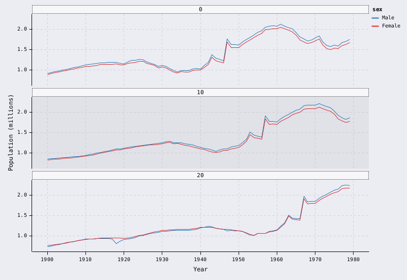
30.10.9 Fig 10.9 Birth cohorts
People born in the same year (year - age), followed over the years, a panel per birth year 1894 - 1905.
Source: Lattice Fig 10.9. Data: US population by age and sex, 1900-1979, R latticeExtra package USAge.df (US Census Bureau); licence: GPL (>= 2) (latticeExtra).
(plot/render-image
{:data (for [row us-age :let [born (- (:year row) (:age row))] :when (<= 1894 born 1905)] (assoc row :born born))
:mapping {:x :year :y :population :color :sex :facet :born}
:scales us-sex
:charts [(chart/line)]
:facets {:columns 4}
:labels {:x "Year" :y "Population (millions)"}}
{:width 900 :height 550})
30.10.10 Fig 10.10 Jitter and a smooth
Source: Lattice Fig 10.10. Data: Earthquakes off Fiji since 1964, R datasets package quakes (Harvard PRIM-H project); licence: Part of R (GPL-2 | GPL-3).
(plot/render-image
{:data quakes
:mapping {:x :mag :y :stations}
:charts [(chart/scatter {:jitter [0.04 0] :rng (r/rng :mersenne 1010) :shape \o :size 5}) (chart/smooth {:band :none})]
:labels {:x "Magnitude (Richter)" :y "Number of stations reporting"}}
{:width 650 :height 500})
30.10.11 Fig 10.11 A shingle and its box plots
Magnitude cut into ten equal-count intervals overlapping by 20 % (top: the intervals), and box plots of the number of reporting stations per interval.
Source: Lattice Fig 10.11. Data: Earthquakes off Fiji since 1964, R datasets package quakes (Harvard PRIM-H project); licence: Part of R (GPL-2 | GPL-3).
(def quakes-mag-10
(shingle/shingle quakes :mag {:count 10 :overlap 0.2 :as :magnitude}))(let [intervals (sort (distinct (map :magnitude quakes-mag-10)))]
(plot/render-image
(plot/arrange [{:data (map-indexed (fn [i iv] {:level (inc i) :lo (:lo iv) :hi (:hi iv)}) intervals)
:mapping {:x :lo :xend :hi :y :level}
:charts [(chart/segment {:width 8 :color [100 200 200]})]
:labels {:x "Magnitude (Richter)" :y "Level"}}
{:data (map (fn [row] (assoc row :level (inc (.indexOf ^java.util.List intervals (:magnitude row))))) quakes-mag-10)
:mapping {:x (levels/categorical :level) :y :stations}
:charts [(chart/box)]
:labels {:x "Magnitude" :y "Number of stations reporting"}}]
{:columns 1 :heights [0.35 0.65]})
{:width 700 :height 700}))
30.10.12 Fig 10.12 Interval labels
Source: Lattice Fig 10.12. Data: Earthquakes off Fiji since 1964, R datasets package quakes (Harvard PRIM-H project); licence: Part of R (GPL-2 | GPL-3).
(plot/render-image
{:data (map #(assoc % :root-stations (m/sqrt (:stations %))) quakes-mag-10)
:mapping {:x :magnitude :y :root-stations}
:charts [(chart/box)]
:theme {:axis {:x {:label-rotation -60}}}
:labels {:x "Magnitude (Richter)" :y "√Number of stations"}}
{:width 800 :height 500})
30.10.13 Fig 10.13 Q-Q plots per interval
Source: Lattice Fig 10.13. Data: Earthquakes off Fiji since 1964, R datasets package quakes (Harvard PRIM-H project); licence: Part of R (GPL-2 | GPL-3).
(plot/render-image
{:data (map #(assoc % :root-stations (m/sqrt (:stations %))) quakes-mag-10)
:mapping {:y :root-stations :facet :magnitude}
:scales {:x {:ticks [-2 0 2]}}
:charts [(chart/qq {:x-distribution [:normal] :size 3 :line false})]
:facets {:columns 5}
:labels {:x "Standard normal quantiles" :y "√Number of stations"}}
{:width 1000 :height 450})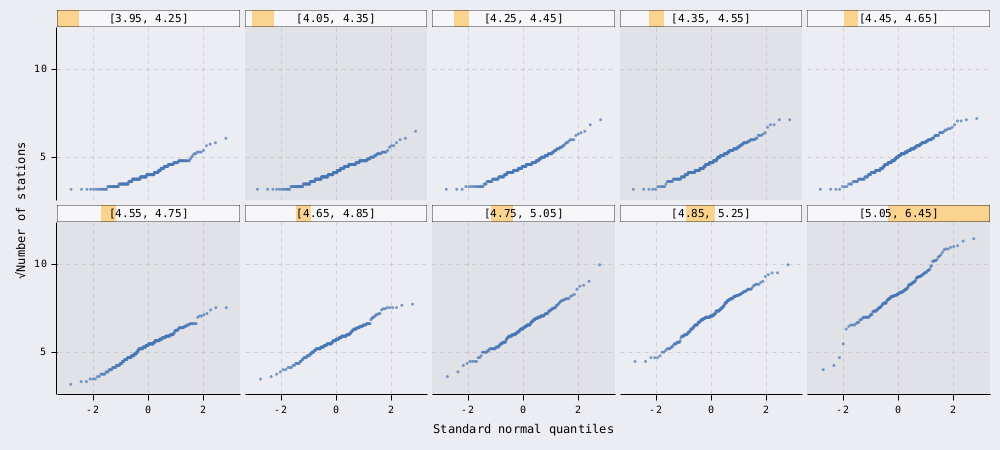
30.10.14 Fig 10.14 A box per magnitude value
Source: Lattice Fig 10.14. Data: Earthquakes off Fiji since 1964, R datasets package quakes (Harvard PRIM-H project); licence: Part of R (GPL-2 | GPL-3).
(plot/render-image
{:data (map #(assoc % :root-stations (m/sqrt (:stations %))) quakes)
:mapping {:x (levels/categorical :mag) :y :root-stations}
:charts [(chart/box {:width 0.3 :size 3})]
:labels {:x "Magnitude (Richter)" :y "√Number of stations"}}
{:width 900 :height 450})
30.10.15 Fig 10.15 A long dot plot
Population density of the states (thousands per square mile), ordered.
Source: Lattice Fig 10.15. Data: US state facts (1970s), R datasets packages state.x77, state.name, state.abb, state.region, state.division, state.center (US Census); licence: Part of R (GPL-2 | GPL-3).
(def states-density
(mapv (fn [{:keys [name population area region]}] {:name name :region region :density (/ (double population) area)}) states))(def by-density {:y {:order-by #(stats/mean (map :density %))}})(plot/render-image
{:data states-density
:mapping {:x :density :y :name}
:scales by-density
:charts [(chart/scatter)]
:theme {:text {:tick-label {:size 8}}}
:labels {:x "Population Density (thousands per square mile)" :y nil}}
{:width 600 :height 800})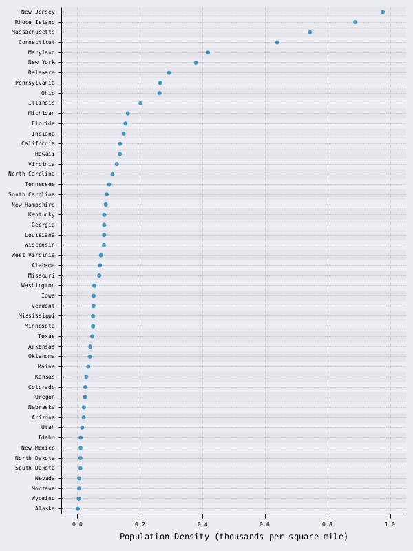
30.10.16 Fig 10.16 Two ranges, two widths
The same dot plot split at 0.2 thousand per square mile (a shingle of two intervals): the wide panel the low densities, each panel its own x range (:free), panel widths 2 : 1.
Source: Lattice Fig 10.16. Data: US state facts (1970s), R datasets packages state.x77, state.name, state.abb, state.region, state.division, state.center (US Census); licence: Part of R (GPL-2 | GPL-3).
(plot/render-image
{:data (shingle/shingle states-density :density {:intervals [[0 0.2] [0.2 1]] :as :range})
:mapping {:x :density :y :name :facet :range}
:scales by-density
:charts [(chart/scatter)]
:facets {:columns 2 :strips false :scales {:x :free} :widths [2 1]}
:theme {:text {:tick-label {:size 8}}}
:labels {:x "Population Density (thousands per square mile)" :y nil}}
{:width 700 :height 800})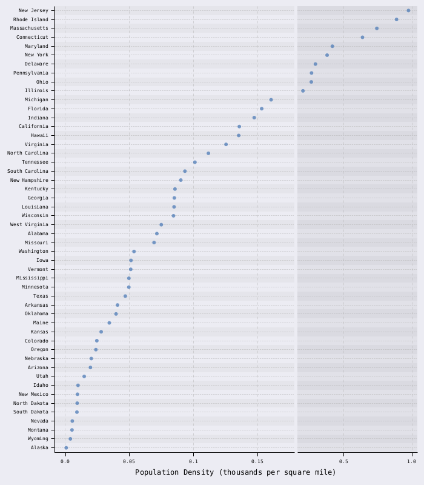
30.10.17 Fig 10.17 Cut and stacked
The DAX index cut into six overlapping time slices (a shingle of the decimal year, shown as dates), each with its own axes.
Source: Lattice Fig 10.17. Data: European stock indices, 1991-1998, R datasets package EuStockMarkets (Erste Bank AG, Vienna); licence: Part of R (GPL-2 | GPL-3).
(let [date (fn [decimal-year]
(let [year (long (m/floor decimal-year))
start (java.time.LocalDate/of (int year) 1 1)]
(.plusDays start (long (m/round (* (- decimal-year year) (.lengthOfYear start)))))))]
(plot/render-image
{:data (map #(assoc % :date (date (:time %)))
(shingle/shingle (filter #(= "DAX" (:series %)) (nu/dataset :eu-stock-markets)) :time
{:count 6 :overlap 0.1 :as :slice}))
:mapping {:x :date :y :value :facet :slice}
:scales {:facet {:formatter (fn [slice] (str (date (:lo slice)) " - " (date (:hi slice))))}}
:charts [(chart/line)]
:facets {:columns 1 :scales {:x :free :y :free}}
:labels {:x "Time" :y "DAX"}}
{:width 800 :height 700}))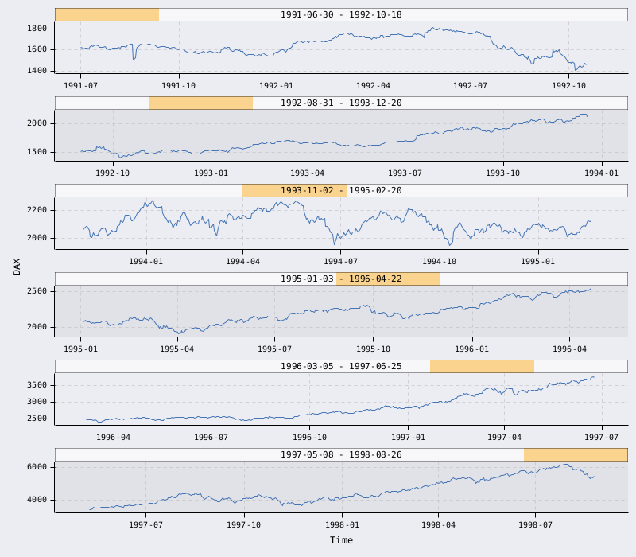
30.10.18 Fig 10.18 Level order matters
The same barley dot plot with varieties and sites as plain text (alphabetical, left) and in R’s factor order (right).
Source: Lattice Fig 10.18. Data: Barley yields, Minnesota 1931-1932, R lattice package barley (Immer et al. 1934; Fisher 1971; Cleveland 1993); licence: GPL (>= 2) (lattice).
(let [panel (fn [varieties sites]
{:data barley
:mapping {:x :yield :y :variety :shape :year :facet :site}
:scales {:y {:domain varieties} :facet {:domain sites} :shape {:domain (nu/levels :barley :year)}}
:charts [(chart/scatter {:size 5})]
:facets {:columns 1}
:theme {:text {:tick-label {:size 7}}}
:labels {:x "yield" :y nil}})]
(plot/render-image
(plot/arrange [(panel (vec (sort (nu/levels :barley :variety))) (vec (sort (nu/levels :barley :site))))
(panel (nu/levels :barley :variety) (vec (rseq (nu/levels :barley :site))))]
{:columns 2})
{:width 900 :height 800}))
30.10.19 Fig 10.19 A log axis
Source: Lattice Fig 10.19. Data: US state facts (1970s), R datasets packages state.x77, state.name, state.abb, state.region, state.division, state.center (US Census); licence: Part of R (GPL-2 | GPL-3).
(def states-per-mile (mapv #(update % :density * 1000.0) states-density))(plot/render-image
{:data states-per-mile
:mapping {:x :density :y :name}
:scales (assoc by-density :x {:kind :log})
:charts [(chart/scatter)]
:theme {:text {:tick-label {:size 8}}}
:labels {:x "Density (per square mile)" :y nil}}
{:width 600 :height 800})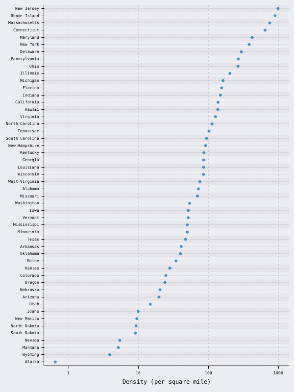
30.10.20 Fig 10.20 A panel per region
Regions ordered by their median density, the states within each by density (free y).
Source: Lattice Fig 10.20. Data: US state facts (1970s), R datasets packages state.x77, state.name, state.abb, state.region, state.division, state.center (US Census); licence: Part of R (GPL-2 | GPL-3).
(def density-by-region
{:data states-per-mile
:mapping {:x :density :y :name :facet :region}
:scales (assoc by-density :x {:kind :log} :facet {:order-by #(stats/median (map :density %)) :descending true})
:charts [(chart/scatter)]
:facets {:columns 1 :scales {:y :free}}
:theme {:text {:tick-label {:size 8}}}
:labels {:x "Density (per square mile)" :y nil}})(plot/render-image density-by-region {:width 600 :height 800})
30.10.21 Fig 10.21 Panel heights by content
As Fig 10.20, each panel as tall as its number of states.
Source: Lattice Fig 10.21. Data: US state facts (1970s), R datasets packages state.x77, state.name, state.abb, state.region, state.division, state.center (US Census); licence: Part of R (GPL-2 | GPL-3).
(let [counts (frequencies (map :region states))
;; top-down as the panels: the largest median first
order (sort-by (fn [r] (- (stats/median (map :density (filter #(= r (:region %)) states-per-mile))))) (keys counts))]
(plot/render-image (assoc-in density-by-region [:facets :heights] (mapv counts order)) {:width 600 :height 800}))
30.10.22 Fig 10.22 Many panels, ordered
Cancer death rates of men against women per county, a panel per state - ordered by the median difference - on log-2 axes with the line y = x (square panels from the image size: :aspect :iso needs linear axes).
Source: Lattice Fig 10.22. Data: Cancer death rates by US county, 1999-2003, R latticeExtra package USCancerRates (National Cancer Institute); licence: GPL (>= 2) (latticeExtra).
(plot/render-image
{:data (filter #(and (:rate-male %) (:rate-female %)) (nu/dataset :us-cancer-rates))
:mapping {:x :rate-female :y :rate-male :facet :state}
:scales {:x {:kind :log :base 2 :ticks [75 150 300 600]} :y {:kind :log :base 2 :ticks [75 150 300 600]}
:facet {:order-by #(stats/median (map (fn [row] (- (:rate-male row) (:rate-female row))) %)) :descending true}}
:charts [(chart/scatter {:size 2}) (chart/function {:f identity :color :black})]
:facets {:columns 7}
:theme {:text {:strip {:size 8} :tick-label {:size 7}}}
:labels {:x "rate.female" :y "rate.male"}}
{:width 1000 :height 800})
30.10.23 Fig 10.23 Strips naming the score
Normal Q-Q plots of GCSE score per A-level score, by gender. (The book changes the strip style; strips here are cljplot2’s.)
Source: Lattice Fig 10.23. Data: A-level chemistry scores, England 1997, R mlmRev package Chem97 (Yang et al. 2002); licence: GPL (>= 2) (mlmRev).
(plot/render-image
{:data chem97
:mapping {:y :gcsescore :color :gender :facet :score}
:scales {:color {:range two-colors} :x {:ticks [-2 0 2]}}
:charts [(chart/qq {:x-distribution [:normal] :size 2 :line false})]
:facets {:columns 3}
:labels {:x "Standard normal quantiles" :y "Average GCSE score"}}
{:width 800 :height 500})
30.10.24 Fig 10.24 Two conditioning variables
A panel per A-level score and gender (a facet grid).
Source: Lattice Fig 10.24. Data: A-level chemistry scores, England 1997, R mlmRev package Chem97 (Yang et al. 2002); licence: GPL (>= 2) (mlmRev).
(plot/render-image
{:data chem97
:mapping {:y :gcsescore :facet-col :score :facet-row :gender}
:scales {:x {:ticks [-2 0 2]}}
:charts [(chart/qq {:x-distribution [:normal] :size 2 :line false})]
:labels {:x "Standard normal quantiles" :y "Average GCSE score"}}
{:width 1000 :height 450})
30.10.25 Fig 10.25 Residuals and their medians (again)
Fig 3.17 repeated in the book’s chapter on data manipulation.
Source: Lattice Fig 10.25. Data: Barley yields, Minnesota 1931-1932, R lattice package barley (Immer et al. 1934; Fisher 1971; Cleveland 1993); licence: GPL (>= 2) (lattice).
(plot/render-image barley-residual-plot {:width 800 :height 450})
30.11 Chapter 11 - Manipulating the trellis Object
30.11.1 Fig 11.1 Linear and log scales side by side
US personal expenditure 1940 - 1960, a panel per category (ordered by the median), stems from 0 on the left, a log-2 axis on the right.
Source: Lattice Fig 11.1. Data: US personal expenditure, 1940-1960, R datasets package USPersonalExpenditure (The World Almanac and Book of Facts 1962); licence: Part of R (GPL-2 | GPL-3).
(let [expenditure {:data (nu/dataset :us-personal-expenditure)
:mapping {:x :expenditure :y :year :facet :category}
:scales {:facet {:order-by #(stats/median (map :expenditure %)) :descending true}}
:facets {:columns 1}
:labels {:x "Expenditure (billion dollars)" :y nil}}]
(plot/render-image
(plot/arrange [(assoc expenditure :charts [(chart/segment {:xend 0}) (chart/scatter)])
(-> expenditure
(assoc :charts [(chart/scatter)])
(assoc-in [:scales :x] {:kind :log :base 2}))]
{:columns 2})
{:width 800 :height 800}))
30.11.2 Fig 11.2 Panel heights
Days of frost per state, a panel per region (ordered by mean frost), the states by frost within each (free y); each panel as tall as its number of states.
Source: Lattice Fig 11.2. Data: US state facts (1970s), R datasets packages state.x77, state.name, state.abb, state.region, state.division, state.center (US Census); licence: Part of R (GPL-2 | GPL-3).
(def frost-plot
{:data states
:mapping {:x :frost :y :name :facet :region}
:scales {:y {:order-by #(stats/mean (map :frost %))} :facet {:order-by #(stats/mean (map :frost %)) :descending true}}
:charts [(chart/scatter)]
:facets {:columns 1 :scales {:y :free}}
:theme {:text {:tick-label {:size 8}}}
:labels {:x "Frost" :y nil}})(let [counts (frequencies (map :region states))
order (sort-by (fn [r] (- (stats/mean (map :frost (filter #(= r (:region %)) states))))) (keys counts))]
(plot/render-image (assoc-in frost-plot [:facets :heights] (mapv counts order)) {:width 600 :height 800}))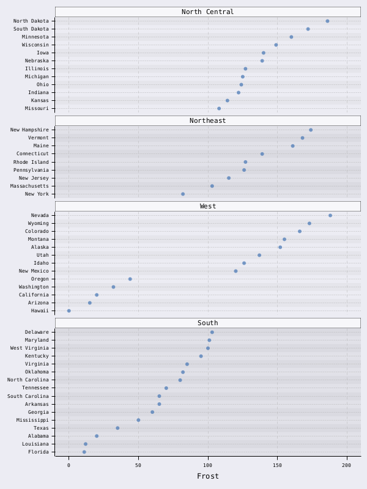
30.11.3 Fig 11.3 One panel
Source: Lattice Fig 11.3. Data: US state facts (1970s), R datasets packages state.x77, state.name, state.abb, state.region, state.division, state.center (US Census); licence: Part of R (GPL-2 | GPL-3).
(plot/render-image (assoc frost-plot :data (filterv #(= "West" (:region %)) states)) {:width 700 :height 450})
30.11.4 Fig 11.4 Twelve views
The quakes cloud turned 0 - 30 degrees about the vertical and tilted from above (elevation 90) to nearly side-on (10), step by step.
Source: Lattice Fig 11.4. Data: Earthquakes off Fiji since 1964, R datasets package quakes (Harvard PRIM-H project); licence: Part of R (GPL-2 | GPL-3).
(plot/render-image
(plot/arrange (for [i (range 12)]
{:data quakes
:mapping {:x :long :y :lat :z :depth}
:charts [(chart/cloud {:domain {:z [690 30]} :axes false :size 2
:view {:azimuth (* -30.0 (/ i 11.0)) :elevation (- 90.0 (* 80.0 (/ i 11.0))) :distance 0.2}})]})
{:columns 4})
{:width 900 :height 700})
30.11.5 Fig 11.5 Tukey mean-difference plot
The two-sample Q-Q plot of Fig 3.10 turned 45 degrees: the difference of each pair of quantiles (girls minus boys) against their mean, per A-level score.
Source: Lattice Fig 11.5. Data: A-level chemistry scores, England 1997, R mlmRev package Chem97 (Yang et al. 2002); licence: GPL (>= 2) (mlmRev).
(let [ps (mapv #(/ (- % 0.5) 100.0) (range 1 101))
quantiles (fn [rows] (stats/quantiles (map :gcsescore rows) ps))]
(plot/render-image
{:data (for [[score rows] (group-by :score chem97)
:let [by-gender (group-by :gender rows)]
[f mq] (map vector (quantiles (by-gender "F")) (quantiles (by-gender "M")))]
{:score score :mean (/ (+ f mq) 2.0) :difference (- f mq)})
:mapping {:x :mean :y :difference :facet :score}
:charts [(chart/scatter {:shape \o :size 5})]
:facets {:columns 3}
:labels {:x "mean" :y "difference"}}
{:width 800 :height 500}))
30.11.6 Fig 11.6 Outer strips
Hourly accesses of the Bioconductor website (log10) by hour of day, a panel per month (columns) and weekday (rows), with the mean per hour.
Source: Lattice Fig 11.6. Data: Hourly accesses of the Bioconductor website, 2007, R latticeExtra package biocAccess (Bioconductor web logs); licence: GPL (>= 2) (latticeExtra).
(let [rows (map #(assoc % :log-counts (m/log10 (:counts %))) (nu/dataset :bioc-access))
means (for [[[month weekday hour] rs] (group-by (juxt :month :weekday :hour) rows)]
{:month month :weekday weekday :hour hour :log-counts (stats/mean (map :log-counts rs))})
months (vec (filter (set (map :month rows)) (nu/levels :bioc-access :month)))]
(plot/render-image
{:data rows
:mapping {:x :hour :y :log-counts :facet-col :month :facet-row :weekday}
:scales {:facet-col {:domain months} :facet-row {:domain (nu/levels :bioc-access :weekday)}}
:charts [(chart/scatter {:size 2}) (chart/line {:data means :color :black})]
:theme {:text {:strip {:size 9}}}
:labels {:x "hour" :y "log10(counts)"}}
{:width 1000 :height 800}))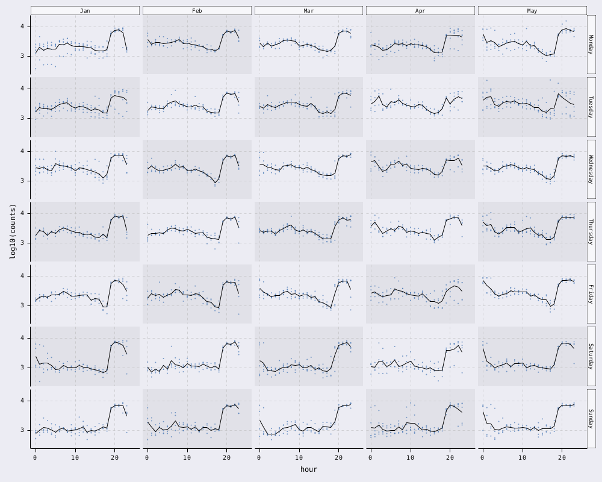
30.12 Chapter 12 - Interactive Displays
Not reproduced: the chapter’s figures - they show interaction with a displayed plot (identifying points, editing it on screen); cljplot2 draws static images.
30.13 Chapter 13 - Advanced Panel Functions
(defn- hypotrochoid
"Points `{:x :y}` of a hypotrochoid in the unit circle (lattice's `panel.hypotrochoid`): a circle of radius `r`
rolling inside it, the pen `d` from its centre, over `cycles` turns at `density` points per turn, in drawing order."
[r d cycles density]
(let [r (double r) d (double d) a (- 1.0 r)]
(for [i (range (inc (* (long cycles) (long density))))
:let [t (* m/TWO_PI (/ (double i) (double density)))]]
{:x (+ (* a (m/cos t)) (* d (m/cos (/ (* a t) r))))
:y (- (* a (m/sin t)) (* d (m/sin (/ (* a t) r))))})))#'galleries.lattice/hypotrochoid30.13.1 Fig 13.1 Hypocycloids
A panel per ratio k = p / 10 of the fixed to the rolling circle (p = 11 … 30): the rolling circle of radius 1/k traced from its rim over 10 turns. Panels run top-down here (lattice fills them bottom-up).
Source: Lattice Fig 13.1.
(let [ratio-text (fn [p] (let [k (/ (double p) 10.0)] (if (== k (m/floor k)) (str (long k)) (str k))))
ps (range 11 31)]
(plot/render-image
{:data (for [p ps, point (hypotrochoid (/ 10.0 p) (/ 10.0 p) 10 30)] (assoc point :k (ratio-text p)))
:mapping {:x :x :y :y :facet :k}
:scales {:facet {:domain (mapv ratio-text ps)}
:x {:domain [-1 1] :axis false} :y {:domain [-1 1] :axis false}}
:charts [(chart/line {:sort false :width 0.8})]
:facets {:columns 4}
:aspect :iso
:labels {:x nil :y nil}}
{:width 650 :height 800}))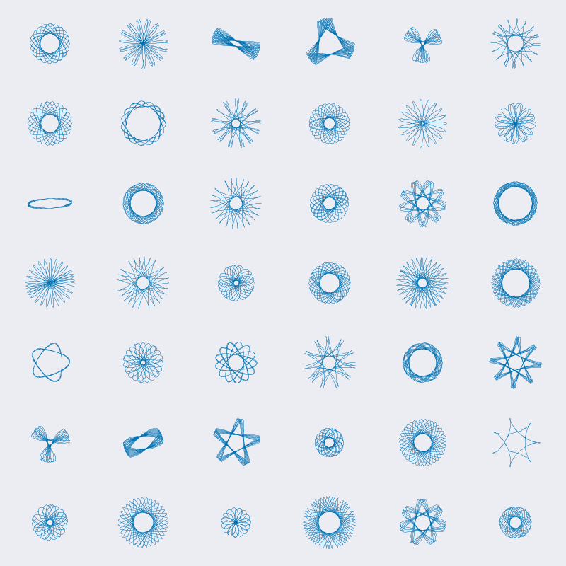
30.13.2 Fig 13.2 Random hypotrochoids
42 hypotrochoids of random rolling radius r in [0.25, 0.75] and pen distance d in [r/4, r], 15 turns each.
Source: Lattice Fig 13.2.
(let [rng (r/rng :mersenne 20070706)]
(plot/render-image
(plot/arrange
(vec (repeatedly 42 (fn []
(let [radius (r/drandom rng 0.25 0.75)
d (r/drandom rng (* 0.25 radius) radius)]
{:data (hypotrochoid radius d 15 30)
:mapping {:x :x :y :y}
:scales {:x {:domain [-1 1] :axis false} :y {:domain [-1 1] :axis false}}
:charts [(chart/line {:sort false :width 0.5})]
:theme {:panel {:grid {:x :none :y :none}}}
:aspect :iso
:labels {:x nil :y nil}}))))
{:columns 6})
{:width 800 :height 800}))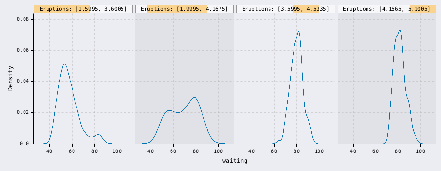
30.13.3 Fig 13.3 Densities by eruption length
Waiting time to the next Old Faithful eruption, a panel per eruption length interval (four equal-count, half-overlapping); a kernel density in place of the book’s logspline fit.
Source: Lattice Fig 13.3. Data: Old Faithful geyser eruptions, R datasets package faithful (Härdle 1991; Azzalini & Bowman 1990); licence: Part of R (GPL-2 | GPL-3).
(plot/render-image
{:data (shingle/shingle faithful :eruptions {:count 4 :overlap 0.5 :as :eruption-length :label "Eruptions"})
:mapping {:x :waiting :facet :eruption-length}
:charts [(chart/density)]
:facets {:columns 4}
:labels {:x "waiting"}}
{:width 900 :height 350})
30.13.4 Fig 13.4 Tufte’s quartile plot
Transformed GCSE score by gender, a panel per A-level score: the median as a point, the whiskers as lines, no box and no outliers (as the book’s panel.bwtufte).
Source: Lattice Fig 13.4. Data: A-level chemistry scores, England 1997, R mlmRev package Chem97 (Yang et al. 2002); licence: GPL (>= 2) (mlmRev).
(plot/render-image
{:data chem97-trans
:mapping {:x :gender :y :gcsescore-trans :facet :score}
:charts [(chart/box {:variant :tufte :outliers false})]
:facets {:columns 6}
:labels {:x nil :y "Transformed GCSE score"}}
{:width 900 :height 400})
(def cars93-cluster-order
"The numeric Cars93 columns (keywords) in the order of a complete-linkage clustering of the rows of their
correlation matrix (euclidean distance; R `order.dendrogram(as.dendrogram(hclust(dist(cor))))`)."
(let [names (vec (distinct (map :row cars93-correlations)))
r (into {} (map (juxt (juxt :row :column) :r)) cars93-correlations)
matrix (mapv (fn [a] (mapv (fn [b] (r [a b])) names)) names)]
(mapv (comp keyword :name) (tree/leaves (tree/from-hclust (cl/hclust matrix {:method :complete}) names)))))(def cars93-short-names
"Names of the numeric Cars93 columns short enough for a strip of the 18 x 18 grid."
{:min-price "min-price" :price "price" :max-price "max-price" :mpg-city "mpg-city" :mpg-highway "mpg-hwy"
:engine-size "engine" :horsepower "hp" :rpm "rpm" :rev-per-mile "rev/mile" :fuel-tank-capacity "tank"
:passengers "passengers" :length "length" :wheelbase "wheelbase" :width "width" :turn-circle "turn"
:rear-seat-room "rear-seat" :luggage-room "luggage" :weight "weight"})(def cars93-pairs
"Every ordered pair of the numeric Cars93 columns with every car's two values: `{:a :b :x :y}` (short column
names; a missing value stays `nil` - the correlation glyph uses the complete pairs)."
(vec (for [a cars93-cluster-order, b cars93-cluster-order, row cars93]
{:a (cars93-short-names a) :b (cars93-short-names b) :x (a row) :y (b row)})))30.13.5 Fig 13.5 Correlation ellipses
The Cars93 correlations (6.12) in clustered order, each pair as the ellipse of a bivariate normal with that correlation, colored by it (the book also prints 100 r inside): a facet grid of correlation glyphs - plot/pairs needs larger cells for 18 variables.
Source: Lattice Fig 13.5. Data: Cars on sale in the USA, 1993, R MASS package Cars93 (Lock 1993); licence: GPL-2 | GPL-3 (MASS).
(let [names (mapv cars93-short-names cars93-cluster-order)]
(plot/render-image
{:data cars93-pairs
:mapping {:x :x :y :y :facet-row :a :facet-col :b}
:scales {:facet-row {:domain names} :facet-col {:domain names}
:x {:domain [0 1] :axis false} :y {:domain [0 1] :axis false}}
:charts [(chart/correlation {:glyph :ellipse})]
:theme {:text {:strip {:size 7}}}
:labels {:x nil :y nil}}
{:width 1000 :height 800}))
30.13.6 Fig 13.6 Correlation pies
The same matrix, each correlation as a filled share of a disk: clockwise for positive, counter-clockwise for negative.
Source: Lattice Fig 13.6. Data: Cars on sale in the USA, 1993, R MASS package Cars93 (Lock 1993); licence: GPL-2 | GPL-3 (MASS).
(let [names (mapv cars93-short-names cars93-cluster-order)]
(plot/render-image
{:data cars93-pairs
:mapping {:x :x :y :y :facet-row :a :facet-col :b}
:scales {:facet-row {:domain names} :facet-col {:domain names}
:x {:domain [0 1] :axis false} :y {:domain [0 1] :axis false}}
:charts [(chart/correlation {:glyph :pie})]
:theme {:text {:strip {:size 7}}}
:labels {:x nil :y nil}}
{:width 1000 :height 800}))
30.13.7 Fig 13.7 Contours on a wireframe
Maunga Whau’s heights as a shaded surface with their contour lines (every 10 m) on the top of the box, as dense points of a cloud over the surface - cljplot2 has no 3D lines.
Source: Lattice Fig 13.7. Data: Maunga Whau volcano topography, R datasets package volcano (Ross Ihaka); licence: Part of R (GPL-2 | GPL-3).
(defn- volcano-contour-points
"Points every tenth of a grid step along the contour lines of the volcano heights at 100, 110, ... 190 m, at
height `top`: rows `{:row :column :height}` (the grid - every row x column of `volcano`)."
[top]
(let [nx (long (reduce max (map :row volcano))) ny (long (reduce max (map :column volcano)))
heights (into {} (map (juxt (juxt :row :column) :height)) volcano)
grid {:xs (double-array (range 1 (inc nx))) :ys (double-array (range 1 (inc ny))) :nx nx :ny ny
:values (double-array (for [j (range 1 (inc ny)) i (range 1 (inc nx))] (heights [i j])))}]
(vec (for [level (range 100 200 10)
{:keys [points closed?]} (contour/isolines grid level)
[[x0 y0] [x1 y1]] (partition 2 1 (cond-> points closed? (conj (first points))))
f (range 0.0 1.0 0.1)]
{:row (+ x0 (* f (- x1 x0))) :column (+ y0 (* f (- y1 y0))) :height top}))))#'galleries.lattice/volcano-contour-points(let [domain {:x [1 87] :y [1 61] :z [90 250]}
view {:azimuth -20 :elevation 30 :distance 0.2}]
(plot/render-image
{:data volcano
:mapping {:x :row :y :column :z :height}
:scales {:color {:range [[0 166 0] [230 230 0] [236 177 118] [242 242 242]]}}
:charts [(chart/surface {:domain domain :view view :aspect [1 (/ 61.0 87.0) 0.3] :axes false})
(chart/cloud {:data (volcano-contour-points (second (:z domain))) :domain domain :size 1.2
:color [40 40 40]})]
:labels {:x nil :y nil}}
{:width 800 :height 550}))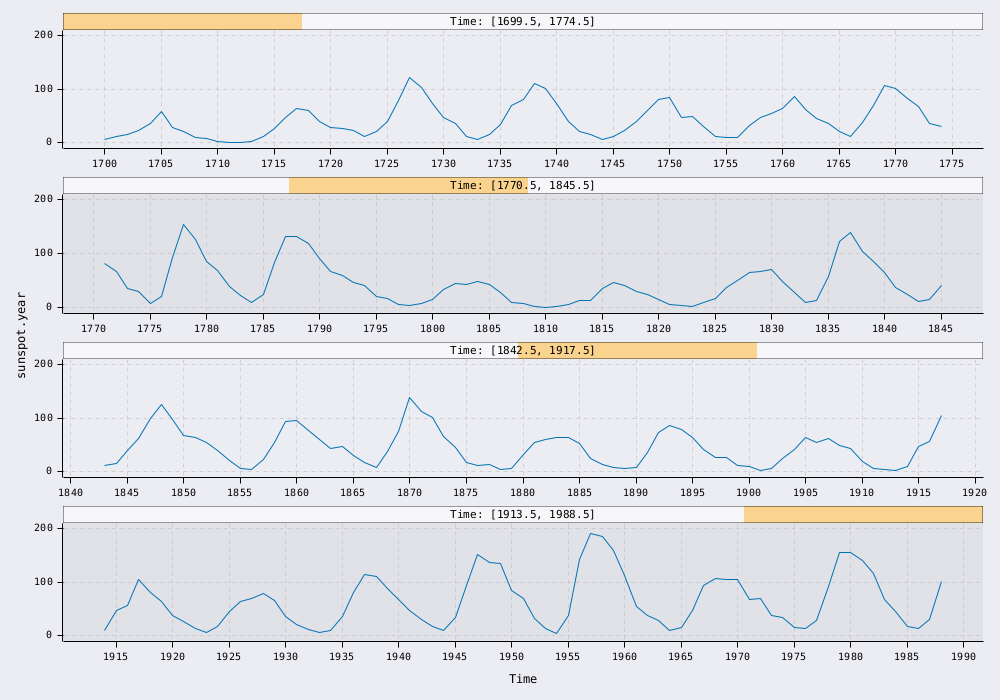
Not reproduced: Figs 13.8 - 13.10 (maps).
30.14 Chapter 14 - New Trellis Displays
30.14.1 Fig 14.1 A cut time series
Yearly sunspot numbers cut into four slightly overlapping periods of equal length (sliced x scales, in place of banking), one above another; the strips on top (lattice puts them on the left).
Source: Lattice Fig 14.1. Data: Yearly sunspot numbers, 1700-1988, R datasets package sunspot.year (WDC-SILSO, Royal Observatory of Belgium); licence: Part of R (GPL-2 | GPL-3).
(plot/render-image
{:data (shingle/shingle (nu/dataset :sunspot-year) :time {:count 4 :overlap 0.05 :as :period :label "Time"})
:mapping {:x :time :y :value :facet :period}
:charts [(chart/line)]
:facets {:columns 1 :scales {:x :sliced}}
:labels {:x "Time" :y "sunspot.year"}}
{:width 1000 :height 700})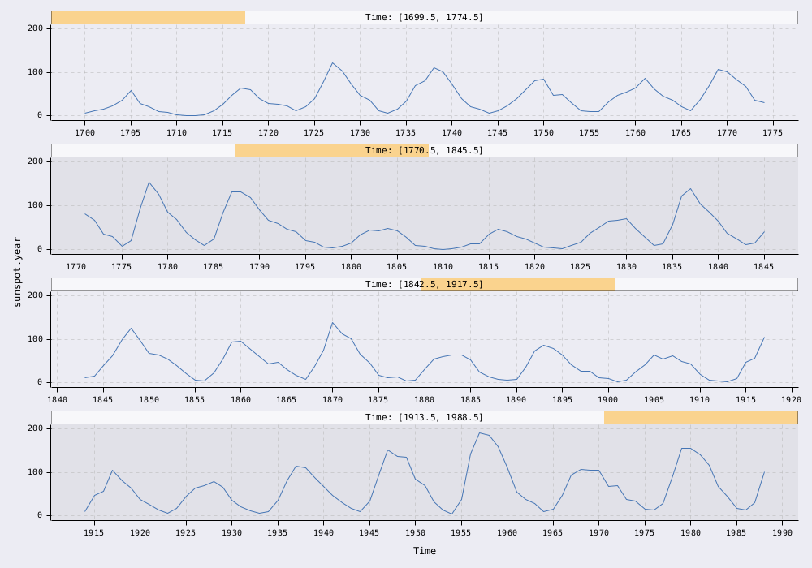
30.14.2 Fig 14.2 Seasonal decomposition
Two months of hourly Bioconductor accesses as data = seasonal + trend + remainder: the seasonal part the mean daily profile, the trend a loess of the rest over 37 hours - stl’s trend window for a 24-hour period (a simple decomposition in place of the book’s stl).
Source: Lattice Fig 14.2. Data: Hourly accesses of the Bioconductor website, 2007, R latticeExtra package biocAccess (Bioconductor web logs); licence: GPL (>= 2) (latticeExtra).
(let [counts (mapv (comp double :counts) (take (* 24 30 2) (nu/dataset :bioc-access)))
n (count counts)
days (mapv #(+ 1.0 (/ (double %) 24.0)) (range n))
trend-of (fn [ys] (let [f (interp/loess days ys {:bandwidth (/ 37.0 n) :iters 0})] (mapv f days)))
profile (fn [ys] (let [by-hour (group-by #(mod (long %) 24) (range n))
means (update-vals by-hour #(stats/mean (map ys %)))
level (stats/mean (vals means))]
(mapv #(- (double (means (mod (long %) 24))) level) (range n))))
seasonal (profile (mapv - counts (trend-of counts)))
trend (trend-of (mapv - counts seasonal))
remainder (mapv - counts seasonal trend)]
(plot/render-image
{:data (for [[component values] [["data" counts] ["seasonal" seasonal] ["trend" trend] ["remainder" remainder]]
i (range n)]
{:component component :day (days i) :value (values i)})
:mapping {:x :day :y :value :facet :component}
:scales {:facet {:domain ["data" "seasonal" "trend" "remainder"]}}
:charts [(chart/line {:width 0.6})]
:facets {:columns 1 :scales {:y :free}}
:labels {:x "Time (Days)" :y nil}}
{:width 1000 :height 700}))
30.14.3 Fig 14.3 Densities by visit
Forward scatter (FSC-H) of the GvHD cells, a ridge per visit, a panel per patient (flowViz’s density plot).
Source: Lattice Fig 14.3. Data: Flow cytometry of GvHD patients (FSC-H), R flowCore package GvHD (Brinkman et al. 2007); licence: Artistic-2.0 (flowCore).
(plot/render-image
{:data (nu/dataset :gvhd)
:mapping {:x :fsc-h :y (levels/categorical :visit) :color (levels/categorical :visit) :facet :patient}
:scales {:facet {:domain (nu/levels :gvhd :patient)}}
:charts [(chart/density)]
:facets {:columns 3}
:legend false
:labels {:x "FSC-H" :y "Visit"}}
{:width 900 :height 700})
30.14.4 Fig 14.4 Hexagonal binning
Hemoglobin by total iron-binding capacity in NHANES, counted in hexagons, a panel per sex.
Source: Lattice Fig 14.4. Data: NHANES I: iron and anemia, R hexbin package NHANES (National Health and Nutrition Examination Survey); licence: GPL-2 (hexbin).
(plot/render-image
{:data (nu/dataset :nhanes)
:mapping {:x :tibc :y :hemoglobin :facet :sex}
:scales {:color {:range [[200 200 200] [0 0 0]]}}
:charts [(chart/bin2d {:bins 30})]
:facets {:columns 2}
:labels {:x "TIBC" :y "Hemoglobin"}}
{:width 900 :height 450})
30.14.5 Fig 14.5 Pie charts
Virginia death rates (1940) by age group as a pie per population group - bars stacked to the group’s whole (:position :normalize) in polar coordinates: panels share the angle scale, so each pie shows shares.
Source: Lattice Fig 14.5. Data: Death rates in Virginia (1940), R datasets package VADeaths (Molyneaux et al. 1947); licence: Part of R (GPL-2 | GPL-3).
(plot/render-image
{:data va-deaths
:mapping {:x :rate :color :age :facet :group}
:coord {:kind :polar}
:scales {:x {:axis false} :facet {:domain ["Urban Male" "Urban Female" "Rural Male" "Rural Female"]}}
:charts [(chart/bar {:position :normalize :width 1.0})]
:facets {:columns 2}
:labels {:x nil :y nil}}
{:width 800 :height 800})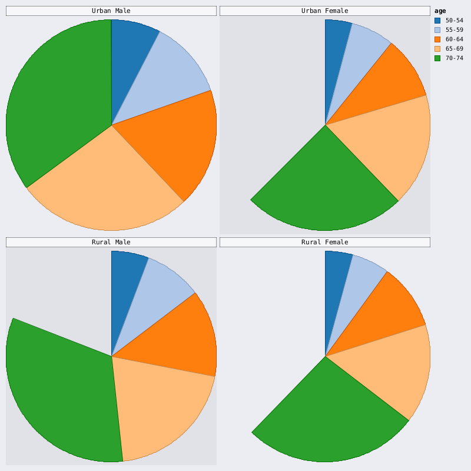
source: notebooks/galleries/lattice.clj